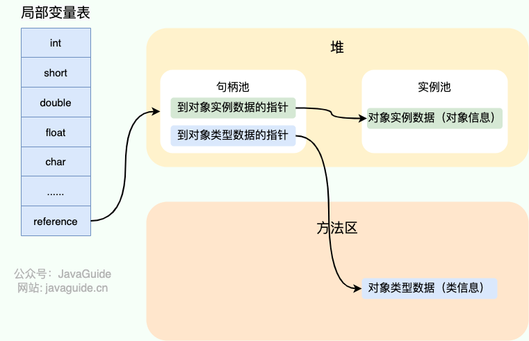

java面试整理
基础语法
基本数据类型
几种基本数据类型
8种数据类型：
- 6 种数字类型：
- 4
种整数型：
byte、short、int、long - 2 种浮点型：
float、double
- 4
种整数型：
- 1 种字符类型：
char - 1 种布尔型：
boolean。
它们所占空间：
| 基本类型 | 位数 | 字节 | 默认值 | 取值范围 |
|---|---|---|---|---|
byte |
8 | 1 | 0 | -128 ~ 127 |
short |
16 | 2 | 0 | -32768 ~ 32767 |
int |
32 | 4 | 0 | -2147483648 ~ 2147483647 |
long |
64 | 8 | 0L | -9223372036854775808 ~ 9223372036854775807 |
char |
16 | 2 | 'u0000' | 0 ~ 65535 |
float |
32 | 4 | 0f | 1.4E-45 ~ 3.4028235E38 |
double |
64 | 8 | 0d | 4.9E-324 ~ 1.7976931348623157E308 |
boolean |
1 | 依赖于JVM厂商 | false | true、false |
跨平台特性也有一部分原因是因为java里基础类型大小不变的这一特性。
基本类型和包装类型的区别
用途：
基本类型：常量的设定、局部变量
包装类型：包装类型可用于泛型、方法参数、对象属性等
存储类型：
基本类型：
- 局部变量存放在 Java 虚拟机栈中的局部变量表中。
- 成员变量放在堆中
包装类型：属于对象类型，几乎都在堆里。
占用空间：
包装 > 基本
默认值：
包装：不赋值就是null 基本：都有基础默认值，具体见上表。
比较方式：
基本数据类型：==比较的是值。
包装数据类型：==
比较的是对象的内存地址。所有整型包装类对象之间值的比较，全部使用
equals() 方法。
包装类型的缓存机制
Java 基本数据类型的包装类型的大部分都用到了缓存机制来提升性能。
Byte,Short,Integer,Long
这 4 种包装类默认创建了数值 [-128，127]
的相应类型的缓存数据，Character 创建了数值在
[0,127] 范围的缓存数据，Boolean 直接返回
True or False。
Character 缓存源码:
1 | public static Character valueOf(char c) { |
Integer 缓存源码：
1 | public static Integer valueOf(int i) { |
注意：
- 值比较：对于Integer类型，处在[-128 , 127]之间的值可以用==比较，因为就在缓存中，可以复用。而以外的值会存放在堆中，不会复用已有的对象，推荐用equals比较。
如果超出对应范围仍然会去创建新的对象，缓存的范围区间的大小只是在性能和资源之间的权衡。
自动装箱与拆箱
- 装箱：将基本类型用它们对应的引用类型包装起来；
- 拆箱：将包装类型转换为基本数据类型；
案例：
1 | Integer i = 10; //装箱 Integer.valueOf |
解析字节码文件：
1 | L1 |
浮点数运算的精度丢失
计算机是二进制的，而且计算机在表示一个数字时，宽度是有限的，无限循环的小数存储在计算机时，只能被截断，所以就会导致小数精度发生损失的情况。这也就是解释了为什么浮点数没有办法用二进制精确表示。
解决：
使用BigDecimal
变量
成员变量与局部变量的区别
语法：
- 成员变量：属于类、可被权限修饰符修饰
- 局部变量：代码块、方法区、方法参数等
存储方式：
- 成员变量：
- 使用static修饰：属于类
- 不使用：属于对象，在堆里存储
- 局部变量：存在于栈内存。
生命周期：
- 成员变量：和对象的生存时间一致
- 局部变量：方法调用开始 -> 结束、或者代码块执行结束
默认值：
- 成员变量：按默认值赋值
- 局部变量：必须手动赋值
方法
静态方法为什么不能调用非静态成员
- 静态方法属于类，在类加载的时候就分配栈内存，可以用类名直接访问，但是非静态成员是对象的信息范畴，必须创建对象实例才能访问。
- 在类的非静态成员不存在的时候静态方法就已经存在了，此时调用在内存中还不存在的非静态成员，属于非法操作。
重载和重写有什么区别
重载就是同样的一个方法能够根据输入输出数据类型的不同，做出不同的处理
重写就是当子类继承自父类的相同方法，输入数据一样，但要做出有别于父类的响应时，你就要覆盖父类方法
重载
发生在同一个类中（或者父类和子类之间），方法名必须相同，参数类型不同、个数不同、顺序不同，方法返回值和访问修饰符可以不同。
| 区别点 | 重载方法 | 重写方法 |
|---|---|---|
| 发生范围 | 同一个类 | 子类 |
| 参数列表 | 必须修改 | 一定不能修改 |
| 返回类型 | 可修改 | 子类方法返回值类型应比父类方法返回值类型更小或相等（子类） |
| 异常 | 可修改 | 子类方法声明抛出的异常类应比父类方法声明抛出的异常类更小或相等； |
| 访问修饰符 | 可修改 | 一定不能做更严格的限制（可以降低限制） |
| 发生阶段 | 编译期 | 运行期 |
深拷贝和浅拷贝区别，什么是引用拷贝？
浅拷贝：浅拷贝会在堆上创建一个新的对象（区别于引用拷贝的一点），不过，如果原对象内部的属性是引用类型的话，浅拷贝会直接复制内部对象的引用地址，也就是说拷贝对象和原对象共用同一个内部对象。
深拷贝：深拷贝会完全复制整个对象，包括这个对象所包含的内部对象。

Object
常见方法
1 | /** |
== 和 equals() 的区别
==：
- 基本类型：比值
- 引用类型：
==比较的是对象的内存地址。
对于 == 来说，不管是比较基本数据类型，还是引用数据类型的变量，其本质比较的都是值，只是引用类型变量存的值是对象的地址。
equals()：只能用来判断两个对象是否相等。
- 类没有重写
equals()方法：通过equals()比较该类的两个对象时，等价于通过“==”比较这两个对象，使用的默认是Object类equals()方法。 - 类重写了
equals()方法：一般我们都重写equals()方法来比较两个对象中的属性是否相等；若它们的属性相等，则返回 true(即，认为这两个对象相等)。
String的equals()方法
String类的equals()方法被重写过，会判断两个字符串的值是否相同。
1 | char[] value; |
hashCode() 方法
方法是本地方法，利用C / C++实现。
作用：为每个对象生成独特的编码，确定对象在哈希表中的索引，方便从哈希表中快速查找。
hashCode存在的意义
“HashSet 如何检查重复”
当你把对象加入
HashSet时，HashSet会先计算对象的hashCode值来判断对象加入的位置，同时也会与其他已经加入的对象的hashCode值作比较，如果没有相符的hashCode，HashSet会假设对象没有重复出现。但是如果发现有相同hashCode值的对象，这时会调用equals()方法来检查hashCode相等的对象是否真的相同。如果两者相同，HashSet就不会让其加入操作成功。如果不同的话，就会重新散列到其他位置。这样我们就大大减少了equals的次数，相应就大大提高了执行速度。
hashcode()其实也是用于判断两个对象是否相同，如果两个对象连哈希码都不相同，那就不用进行equals比较了。在一定程度上提高了集合审查元素的效率。
为什么hashcode()过后还要equals比较？
hashcode可能会发生哈希冲突，所以保险起见，满足这两个方法这两个对象就是相同的。
- hashcode() && equals : 相同
- !hashcode() ： 一定不相同。
所以说，重写equals方法也必须重写hashcode方法，防止出现两个对象equal但是hashcode值不一样。
String
String、StringBuffer、StringBuilder 的区别
可变性：
- String不可变
StringBuilder与StringBuffer都继承自AbstractStringBuilder类，在AbstractStringBuilder中也是使用字符数组保存字符串，不过没有使用final和private关键字修饰，最关键的是这个AbstractStringBuilder类还提供了很多修改字符串的方法比如append方法。
线程安全性：
String中的对象是不可变的，也就可以理解为常量，线程安全。StringBuffer对方法加了同步锁或者对调用的方法加了同步锁，所以是线程安全的。StringBuilder并没有对方法进行加同步锁，所以是非线程安全的。
性能：
StringBuilder > StringBuffer
- 操作少量的数据: 适用
String - 单线程操作字符串缓冲区下操作大量数据: 适用
StringBuilder - 多线程操作字符串缓冲区下操作大量数据: 适用
StringBuffer
String 为什么是不可变的
1 | public final class String implements java.io.Serializable, Comparable<String>, CharSequence { |
- final修饰内部的char数组，即使这个char引用指针能变，但这个成员变量是私有的，不会暴露给外界。
String类被final修饰导致其不能被继承，进而避免了子类破坏String不可变。
字符串拼接用“+” 还是 StringBuilder
Java 语言本身并不支持运算符重载，“+”和“+=”是专门为 String 类重载过的运算符，也是 Java 中仅有的两个重载过的运算符。
1 | String str1 = "he"; |

字符串对象通过“+”的字符串拼接方式，实际上是通过
StringBuilder 调用 append()
方法实现的，拼接完成之后调用 toString() 得到一个
String 对象 。
字符串常量池的作用
字符串常量池 是 JVM 为了提升性能和减少内存消耗针对字符串（String 类）专门开辟的一块区域，主要目的是为了避免字符串的重复创建。
String s1 = new String("abc");这句话创建了几个字符串对象
- 如果常量池没有"abc"这个字符串，会先创建"abc"实例，然后再创建s1引用对象
- 如果有，只创建s1引用对象
String的intern 方法有什么作用
String.intern() 是一个
native（本地）方法，其作用是将指定的字符串对象的引用保存在字符串常量池中
- 如果字符串常量池中保存了对应的字符串对象的引用，就直接返回该引用。
- 如果字符串常量池中没有保存对应的字符串对象的引用，那就在常量池中创建一个指向该字符串对象的引用并返回
1 | // 在堆中创建字符串对象”Java“ |
String 类型的变量和常量做“+”运算时发生了什么
对于编译期可以确定值的字符串，也就是常量字符串（被写死的值） ，jvm 会将其存入字符串常量池。
并且，字符串常量拼接得到的字符串常量在编译阶段就已经被存放字符串常量池，这个得益于编译器的优化——常量折叠。
常量折叠：
对于 String str3 = "str" + "ing"; 编译器会给你优化成
String str3 = "string"; 。
引用类型的值无法在编译器确定，无法优化。
对象引用和“+”的字符串拼接方式，实际上是通过
StringBuilder 调用 append()
方法实现的，拼接完成之后调用 toString() 得到一个
String 对象 。
但是String引用类型被final修饰后，可以让编译器当成常量处理。如下：
1 | final String str1 = "str"; |
如果 ，编译器在运行时才能知道其确切值的话，就无法对其优化。下面就不行：
1 | final String str1 = "str"; |
异常
Java 异常类层次结构图
Exception 和 Error 有什么区别
Exception：可catch捕获、可处理
Checked Exception (受检查异常，必须处理) ：没被catch通不过编译。
- (除了运行时异常以外，都是受查异常)
Unchecked Exception (不受检查异常，可以不处理)：
常见的非受查异常：
NullPointerException(空指针错误)IllegalArgumentException(参数错误比如方法入参类型错误)NumberFormatException（字符串转换为数字格式错误，IllegalArgumentException的子类）ArrayIndexOutOfBoundsException（数组越界错误）ClassCastException（类型转换错误）ArithmeticException（算术错误）SecurityException（安全错误比如权限不够）UnsupportedOperationException(不支持的操作错误比如重复创建同一用户)
error：不建议catch捕获，遇到线程终止处理。
- 常见：OOM、SOF
Throwable 类常用方法有哪些
String getMessage(): 返回异常发生时的简要描述String toString(): 返回异常发生时的详细信息String getLocalizedMessage(): 返回异常对象的本地化信息。使用Throwable的子类覆盖这个方法，可以生成本地化信息。如果子类没有覆盖该方法，则该方法返回的信息与getMessage()返回的结果相同void printStackTrace(): 在控制台上打印Throwable对象封装的异常信息
try-catch-finally 使用
try块：用于捕获异常。其后可接零个或多个catch块，如果没有catch块，则必须跟一个finally块。catch块：用于处理 try 捕获到的异常。finally块：无论是否捕获或处理异常，finally块里的语句都会被执行。- 当在
try块或catch块中遇到return语句时，finally语句块将在方法返回之前被执行。 - 注意：不要在 finally 语句块中使用 return! 当 try 语句和 finally 语句中都有 return 语句时，try 语句块中的 return 语句会被忽略。这是因为 try 语句中的 return 返回值会先被暂存在一个本地变量中，当执行到 finally 语句中的 return 之后，会覆盖掉try块里的return返回值。
- 当在
finally 中的代码是否一定会执行
基本上都是外界环境出问题所导致的：
- finally 之前虚拟机被终止运行的话，finally 中的代码就不会被执行。
- 程序所在的线程死亡。
- CPU关闭
使用
try-with-resources 代替try-catch-finally
- 适用范围（资源的定义）： 任何实现
java.lang.AutoCloseable或者java.io.Closeable的对象 - 关闭资源和 finally 块的执行顺序： 在
try-with-resources语句中，任何 catch 或 finally 块在声明的资源关闭后运行。
类似于InputStream、OutputStream、Scanner、PrintWriter等的资源都需要我们调用close()方法来手动关闭，一般情况下我们都是通过try-catch-finally语句来实现这个需求，如下：
1 | //读取文本文件的内容 |
使用 Java 7 之后的 try-with-resources
语句改造上面的代码:
1 | try (Scanner scanner = new Scanner(new File("test.txt"))) { |
多个资源需要关闭的时候，使用 try-with-resources
实现，通过使用分号分隔，可以在try-with-resources块中声明多个资源。
1 | try (BufferedInputStream bin = new BufferedInputStream(new FileInputStream(new File("test.txt"))); |
异常使用有哪些需要注意的地方？
- 不要把异常定义为静态变量，因为这样会导致异常栈信息错乱。每次手动抛出异常，我们都需要手动 new 一个异常对象抛出。
- 抛出的异常信息一定要有意义。
- 建议抛出更加具体的异常比如字符串转换为数字格式错误的时候应该抛出
NumberFormatException而不是其父类IllegalArgumentException。 - 使用日志打印异常之后就不要再抛出异常了（两者不要同时存在一段代码逻辑中）。
泛型
泛型的使用方式
泛型类
1 | public class Generic<T>{ |
泛型接口
1 | public interface Generator<T> { |
实现泛型接口，不指定类型：
1 | class GeneratorImpl<T> implements Generator<T>{ |
实现泛型接口，指定类型：
1 | class GeneratorImpl<T> implements Generator<String>{ |
泛型方法
1 | public static < E > void printArray( E[] inputArray ) |
使用：
1 | // 创建不同类型数组：Integer, Double 和 Character |
注意:
public static < E > void printArray( E[] inputArray )一般被称为静态泛型方法;在 java 中泛型只是一个占位符，必须在传递类型后才能使用。类在实例化时才能真正的传递类型参数，由于静态方法的加载先于类的实例化，也就是说类中的泛型还没有传递真正的类型参数，静态的方法的加载就已经完成了，所以静态泛型方法是没有办法使用类上声明的泛型的。只能使用自己声明的<E>
项目中哪里用到了泛型
- 自定义接口通用返回结果
CommonResult<T>通过参数T可根据具体的返回类型动态指定结果的数据类型 - 定义
Excel处理类ExcelUtil<T>用于动态指定Excel导出的数据类型 - 构建集合工具类（参考
Collections中的sort,binarySearch方法）。
反射
获取 Class 对象的四种方式
利用class类对象，将一个类的方法、变量信息提取出来。
知道具体类情况
1
Class clazz = TargetObject.class;
通过
Class.forName()传入类的全路径获取：1
Class alunbarClass1 = Class.forName("cn.javaguide.TargetObject");
通过对象实例
instance.getClass()获取：1
2TargetObject o = new TargetObject();
Class alunbarClass2 = o.getClass();通过类加载器
xxxClassLoader.loadClass()传入类路径获取:1
ClassLoader.getSystemClassLoader().loadClass("cn.javaguide.TargetObject");
反射基本操作
1 | public class TargetObject { |
注解
Annotation （注解） 是 Java5
开始引入的新特性，可以看作是一种特殊的注释，主要用于修饰类、方法或者变量，提供某些信息供程序在编译或者运行时使用。
注解本质是一个继承了Annotation 的特殊接口：
1 |
|
实现
定义一个
@interface，必须要用@Retention注解标识；可以在接口内定义要穿的参数进行属性定义
定义方式
RetentionPolicy value();
属性是由注解处理器类库(java.lang.reflect.AnnotatedElement)发现并处理：
AnnotatedElement接口是所有程序元素（Class、Method和Constructor）的父接口，所以程序通过反射获取了某个类的AnnotatedElement对象之后，程序就可以调用该对象的如下四个个方法来访问Annotation信息：
注解处理基础方法：
1 | 方法1：<T extends Annotation> T getAnnotation(Class<T> annotationClass): 返回改程序元素上存在的、指定类型的注解，如果该类型注解不存在，则返回null。 |
注解的解析方法有哪几种
注解只有被解析之后才会生效，常见的解析方法有两种：
- 编译期直接扫描：编译器在编译 Java
代码的时候扫描对应的注解并处理，比如某个方法使用
@Override注解，编译器在编译的时候就会检测当前的方法是否重写了父类对应的方法。 - 运行期通过反射处理：像框架中自带的注解(比如 Spring
框架的
@Value、@Component)都是通过反射来进行处理的。
SPI
SPI 即 Service Provider Interface ，字面意思就是：“服务提供者的接口”。我的理解是：自己能做的东西，做明白的东西外包
与API的区别：
序列化和反序列化
- 序列化：将数据结构或对象转换成二进制字节流的过程
- 反序列化：将在序列化过程中所生成的二进制字节流转换成数据结构或者对象的过程
应用场景：
- 数据传输、远程调用：对象在进行网络传输（比如远程方法调用 RPC 的时候）之前需要先被序列化，接收到序列化的对象之后需要再进行反序列化；
- 持久化：将对象存储到文件之前需要进行序列化，将对象从文件中读取出来需要进行反序列化；
- 缓存：将对象存储到数据库（如 Redis）之前需要用到序列化，将对象从缓存数据库中读取出来需要反序列化；
- 将对象存储到内存之前需要进行序列化，从内存中读取出来之后需要进行反序列化。
序列化属于OSI七层模型的应用层。
对某些字段不进行序列化：
使用 transient 关键字修饰。
transient
关键字的作用是：阻止实例中那些用此关键字修饰的的变量序列化；当对象被反序列化时，被
transient 修饰的变量值不会被持久化和恢复。
关于 transient 还有几点注意：
transient只能修饰变量，不能修饰类和方法。transient修饰的变量，在反序列化后变量值将会被置成类型的默认值。例如，如果是修饰int类型，那么反序列后结果就是0。static变量因为不属于任何对象(Object)，所以无论有没有transient关键字修饰，均不会被序列化。
过程
serialVersionUID：
序列化期间，针对可序列化的类，它们会有唯一版本号与之相关联。
反序列化期间，用于验证序列化对象的发送者和接收者为这个对象加载了兼容序列化的类（这个类继承了序列化接口、同一类的对象）。接收者为对象加载的类的
serialVersionUID与发送者的不相同，就会报异常：InvalidClassException但是在序列化中，发送者和接收者不是同一个人，即，这些人可能不同，机器或系统可能不同，并且位置必须不同。在序列化中，发送方和接收方都应仅在开始时具有.class文件，即，要进行序列化的人和准备反序列化的人仅应在开始时包含相同的.class文件。
序列化时，针对每个对象，发送方JVM都会保存一个Unique Identifier。JVM负责根据发送方系统中存在的相应.class文件生成该唯一ID。
反序列化时，接收方JVM将与对象关联的唯一ID与本地类Unique ID进行比较，即JVM还将基于接收方系统中存在的相应.class文件创建唯一ID。如果两个唯一的ID都匹配，则将仅执行反序列化。否则，我们将获得Runtime Exception，提示InvalidClassException。这个唯一的标识符不过是SerialVersionUID。
语法糖
方便程序员开发程序而设计的一种特殊语法——语法糖。
主要有泛型、自动拆装箱、变长参数、枚举、内部类、增强 for 循环、try-with-resources 语法、lambda 表达式等。
JVM 其实并不能识别语法糖，Java 语法糖要想被正确执行，需要先通过编译器进行解糖，编译阶段变成可识别的语法。
比较器
Comparator
比较器接口。
1 |
|
排序一维数组
基础类型：

包装类型：
用匿名内部类，也是直接采用运算符

排序二维数组


排序对象数组
必须按照对象中的某一具体数值属性排序。
创建Student学生实体类：
1 | public class Student { |

Comparable
也是一个接口，用于定义类的时候实现接口，重写compareTo方法，对特定的对象进行排序字段设置。

本地方法
JAVA本地方法详解，什么是JAVA本地方法？-CSDN博客
一个Native Method就是一个java调用非java代码的接口。
集合
集合框架族：

List
ArrayList
特性
- arrayList基于动态数组
- 创建不用指定大小
- 动态扩容
- arrayList有丰富API
- arrayList只能存储对象类型，不能存储基础类型。
- arrayList可以存储空值。
各类操作的效率
插入：
- 头插：后面元素需要往后移动，复杂度O(n)
- 尾插：O(1)
- 中间插：随机位置的话，O(n/2) -> O(n)
- 扩容：O(n)
删除：
- 头删：涉及移动元素，后面的元素移动到前面。O(n)
- 尾删：O(1)
- 中间删：O(n/2) -> O(n)
集合计算API
交集
1 | ArrayList<Integer> arraylist1 = new ArrayList<Integer>(); |
并集
没有封装好的API，使用合并去重方法：
1 | // 两个整数集求并集 |
补集
补集的概念：设S是一个集合,A是S的一个子集,由S中所有不属于A的元素组成的集合，叫做A对于S的补集,
1 | ArrayList<Integer> arraylist1 = new ArrayList<Integer>(); |
部分源码分析
接口：
1 | public class ArrayList<E> extends AbstractList<E> |
List<E>：RandomAccess：标志接口，支持快速随机访问Cloneable：可进行深拷贝、浅拷贝Serializable
类图：
扩容机制
构造方法：
1 | /** |
- 如果创建的时候未指定大小，默认给一个空数组不占空间，然后真正用到的时候，比如添加第一个元素，会扩容到10
add方法：
1 | /** |
ensureCapacityInternal()方法，获取最小需求量
1 | //得到最小扩容量 |
判断是否需要扩容：
1 | //判断是否需要扩容 |
- 添加第一个元素，开始创建大小为10的数组
- 添加元素到第10个
- add第11个元素，先执行
ensureCapacityInternal()方法，，得知最小需求量已经为11，然后调用ensureExplicitCapacity方法判断是否需要扩容，发现11 > 原本的数量10，所以需要扩容。
实际扩容方法grow()：
1 | /** |
- 当 add 第 1 个元素时，oldCapacity 为 0，经比较后第一个 if
判断成立，newCapacity = minCapacity(为 10)。但是第二个 if
判断不会成立，即 newCapacity 不比 MAX_ARRAY_SIZE 大，则不会进入
hugeCapacity方法。数组容量为 10，add 方法中 return true,size 增为 1。 - 当 add 第 11 个元素进入 grow 方法时，newCapacity 为 15，比 minCapacity（为 11）大，第一个 if 判断不成立。新容量没有大于数组最大 size，不会进入 hugeCapacity 方法。数组容量扩为 15，add 方法中 return true,size 增为 11。
- 以此类推······
hugeCapacity() 方法。
1 | private static int hugeCapacity(int minCapacity) { |
LinkedList
特性
- 底层双向链表。
- 每个元素存储额外的字段占用空间
- 头尾插入删除效率很高
各类操作的效率
- 头插头删、尾插尾删：O(1)
- 指定位置插入：O(n/2) -> O(n)
LinkedList与ArrayList区别
线程安全
两者都不安全。
内存
- ArrayList空间浪费在扩容后预留的空间。
- LinkedList空间浪费在每个结点的额外存储指针所占有的空间
快速随机访问
快速随机访问就是通过元素的序号快速获取元素对象，如get(int index)方法
- LinkedList底层不是数组，不支持根据索引快速查找，所以随机访问的性能不高
- ArrayList支持。
插入删除的位置是否受容器内部元素位置的影响
- ArrayList：尾插无所谓，但是其它情况都是O(N)
- LinkedList：头尾插都无所谓，中间插O(N)
底层数据结构
ArrayList 底层使用的是 Object
数组；
LinkedList 底层使用的是 双向链表
数据结构
Queue
Queue
是单端队列，只能从一端插入元素，另一端删除元素，实现上一般遵循
先进先出（FIFO） 规则。
Queue 扩展了 Collection 的接口，根据
因为容量问题而导致操作失败后处理方式的不同
可以分为两类方法: 一种在操作失败后会抛出异常，另一种则会返回特殊值。
Queue 接口 |
抛出异常 | 返回特殊值 |
|---|---|---|
| 插入队尾 | add(E e) | offer(E e) |
| 删除队首 | remove() | poll() |
| 查询队首元素 | element() | peek() |
Deque 是双端队列，在队列的两端均可以插入或删除元素。
Deque 扩展了 Queue 的接口,
增加了在队首和队尾进行插入和删除的方法，同样根据失败后处理方式的不同分为两类：
Deque 接口 |
抛出异常 | 返回特殊值 |
|---|---|---|
| 插入队首 | addFirst(E e) | offerFirst(E e) |
| 插入队尾 | addLast(E e) | offerLast(E e) |
| 删除队首 | removeFirst() | pollFirst() |
| 删除队尾 | removeLast() | pollLast() |
| 查询队首元素 | getFirst() | peekFirst() |
| 查询队尾元素 | getLast() | peekLast() |
Deque 还提供有 push() 和 pop()
等其他方法，可用于模拟栈.
ArrayDeque 与 LinkedList 的区别
ArrayDeque是基于可变长的数组和双指针来实现，而LinkedList则通过链表来实现。ArrayDeque不支持存储NULL数据，但LinkedList支持。ArrayDeque是在 JDK1.6 才被引入的，而LinkedList早在 JDK1.2 时就已经存在。ArrayDeque插入时可能存在扩容过程, 不过均摊后的插入操作依然为 O(1)。虽然LinkedList不需要扩容，但是每次插入数据时均需要申请新的堆空间，均摊性能相比更慢。
arrayDeque性能高一点。
Hash&Map
HashMap 和 Hashtable 的区别
线程安全：
- hashmap线程不安全
- hashtable整个表加锁
效率：
- hashmap正常
- hashtable阳慢，建议不用
null key的支持：
- hashmap支持单个null key，值的null可以有多个
- hashtable不支持
默认容量、扩容：
- hashmap默认容量：16 hashtable默认容量：11
- 给定容量：hashmap将给定的容量转化为最近的2的n次方幂，hashtable直接用。
- hashmap达到负载因子扩容为原来的二倍，hashtable扩容为2n+1
底层数据结构：
- hashmap：数组、链表|红黑树
- hashtable：数组
HashMap 的长度为什么是 2 的幂次方
1、便于位运算计算
假设hashmap的长度是n，假设元素的hash值已经计算就是hash。
如果要确定数据要存放的具体位置，通过
hash % n这个公式计算。但是二进制计算的效率要比%效率高得多，那么把这个公式转换一下，就是
hash & (n - 1)。
但是有个大前提：数组长度必须是2的n次方。所以...
2、使数据均匀分布，减少哈希冲突
假设空间大小是15，减1是14，二进制位对应：1110。
假如这时候有一个对象，哈希值的二进制中，最后一位无论是啥，与1110 进行与运算得到的结果，最后一位永远是0，这样hash表中就会一直有一个数组的索引数字计算不到，那就会浪费空间，而且会提高哈希冲突的概率。
树化阈值为什么是8
- 尽量少转化为红黑树，因为红黑树耗内存资源。转化过程中也影响程序性能。
- 转换成树是为了提高查找性能，链表的时间复杂度是O(n)，树的时间复杂度是O(logn) ，当阈值是8的时候，logn计算的结果是3，对于O(n)的链表来说，平均查找次数是4，这相当于一个分界点。 <8 链表查询效率高， > 8就是红黑树查询效率高了。
为什么负载因子是0.75
源码解释：
1 | Because TreeNodes are about twice the size of regular nodes, we |
首先，得出0.75这个值，是通过数学统计的方式得出，这个方式叫做泊松分布。
判断的依据是，根据不同的负载因子，得出，在hash冲突的情况下，链表结点的个数，服从这个分布；
使用0.75作为负载因子，在hash分布均匀的情况下，其每个桶链表结点的个数能超过8的概率，不及千万分之一，因此这是最佳实践产生的结果。
HashMap 和 HashSet 区别
HashSet 底层就是基于 HashMap 实现的。
HashMap |
HashSet |
|---|---|
实现了 Map 接口 |
实现 Set 接口 |
| 存储键值对 | 仅存储对象 |
调用 put()向 map
中添加元素 |
调用 add()方法向
Set 中添加元素 |
HashMap 使用键（Key）计算
hashcode |
HashSet 使用成员对象来计算
hashcode 值，对于两个对象来说 hashcode
可能相同，所以equals()方法用来判断对象的相等性 |
HashSet 如何检查重复
添加对象的时候，hashset先计算对象的hashcode，通过hashcode判断对象要添加的位置在哪里，假如这个位置有空，添加进去，否则添加失败。（hashcode + equals）
add源码：
1 | // 返回值：当 set 中没有包含 add 的元素时返回真 |
TreeMap 相比于HashMap特性

实现 NavigableMap 接口有了对集合内元素的搜索的能力。
实现SortedMap接口让 TreeMap
有了对集合中的元素根据键排序的能力
HashMap 常见的遍历方式
使用迭代器（Iterator）EntrySet 的方式进行遍历；
1
2
3
4
5
6Iterator<Map.Entry<Integer, String>> iterator = map.entrySet().iterator();
while (iterator.hasNext()) {
Map.Entry<Integer, String> entry = iterator.next();
System.out.println(entry.getKey());
System.out.println(entry.getValue());
}使用迭代器（Iterator）KeySet 的方式进行遍历；
1
2
3
4
5
6Iterator<Integer> iterator = map.keySet().iterator();
while (iterator.hasNext()) {
Integer key = iterator.next();
System.out.println(key);
System.out.println(map.get(key));
}使用 For Each EntrySet 的方式进行遍历；
1
2
3
4for (Map.Entry<Integer, String> entry : map.entrySet()) {
System.out.println(entry.getKey());
System.out.println(entry.getValue());
}使用 For Each KeySet 的方式进行遍历；
1
2
3
4for (Integer key : map.keySet()) {
System.out.println(key);
System.out.println(map.get(key));
}使用 Lambda 表达式的方式进行遍历；
1
2
3
4map.foreach((key,value) -> {
System.out.println(key);
System.out.println(value);
})使用 Streams API 单线程的方式进行遍历；
1
2
3
4map.entrySet().stream().forEach((entry) -> {
System.out.println(entry.getKey());
System.out.println(entry.getValue());
});使用 Streams API 多线程的方式进行遍历。
1
2
3
4map.entrySet().parallelStream().forEach((entry) -> {
System.out.println(entry.getKey());
System.out.println(entry.getValue());
});
hashmap如何解决哈希冲突
hash算法
概念：把任意长度的输入通过散列算法，变成固定长度的输出，这个输出结果就是一个散列值。
Hash冲突是由于哈希算法，被计算的数据是无限的，而计算后的结果的范围是有限的，总会存在不同的数据，经过计算之后得到值是一样，那么这个情况下就会出现所谓的哈希冲突
解决hash冲突的方法
开放定址法
从发生冲突的那个位置开始，按照一定次序从Hash表找到一个空闲位置然后把发生冲突的元素存入到这个位置，而在java中，ThreadLocal就用到了线性探测法来解决Hash冲突
删除元素过程
并不是真正的删除（把结点置为空），而是把这个元素标记，等下次有元素进来的时候取代他，才真正删除。
原因：线性探测法，在搜寻过程中遇到null直接返回。同时，如果删掉中间某一结点，后续的结点还要更改位置，比较麻烦
链式寻址法（拉链法）
这是一种常见的方法，简单理解就是把存在Hash冲突的key，以单向链表来进行存储，比如HashMap
- 再hash
- 建立公共移除区
HashMap底层源码实现
数据结构：
- 1.8之前是数组+链表
- 1.8之后是数组+链表|红黑树
- 树化：
- 退化：
- 树化阈值：
- 扩容
扰动函数：哈希表为了减少冲突所定义的一种函数。
hashcode()是每个对象都有的获取本身独一无二标识码的一种方法。
1 | static final int hash(Object key) { |
构造方法：
1 | // 默认构造函数。 |
putMapEntries方法
1
2
3
4
5
6
7
8
9
10
11
12
13
14
15
16
17
18
19
20
21
22
23
24
25
26
27
28
29
30
31final void putMapEntries(Map<? extends K, ? extends V> m, boolean evict) {
int s = m.size();
if (s > 0) {
// 判断table是否已经初始化
if (table == null) { // pre-size
/*
* 未初始化，s为m的实际元素个数，ft=s/loadFactor => s=ft*loadFactor, 跟我们前面提到的
* 阈值=容量*负载因子 是不是很像，是的，ft指的是要添加s个元素所需的最小的容量
*/
float ft = ((float)s / loadFactor) + 1.0F;
int t = ((ft < (float)MAXIMUM_CAPACITY) ?
(int)ft : MAXIMUM_CAPACITY);
/*
* 根据构造函数可知，table未初始化，threshold实际上是存放的初始化容量，如果添加s个元素所
* 需的最小容量大于初始化容量，则将最小容量扩容为最接近的2的幂次方大小作为初始化。
* 注意这里不是初始化阈值
*/
if (t > threshold)
threshold = tableSizeFor(t);
}
// 已初始化，并且m元素个数大于阈值，进行扩容处理
else if (s > threshold)
resize();
// 将m中的所有元素添加至HashMap中，如果table未初始化，putVal中会调用resize初始化或扩容
for (Map.Entry<? extends K, ? extends V> e : m.entrySet()) {
K key = e.getKey();
V value = e.getValue();
putVal(hash(key), key, value, false, evict);
}
}
}
put方法

1 | public V put(K key, V value) { |
get方法
大致流程：
- 根据key，调用hash方法算出hash码，然后通过哈希码hash调用内部方法getNode。
- 通过哈希码算出这个元素应在的位置，去这个位置寻找。
- 假如这个位置的第一个结点和要找的结点不一致：
- 可能在链表结点中
- 可能在树节点中
1 | public V get(Object key) { |
resize扩容
1 | final Node<K,V>[] resize() { |
Set
HashSet与TreeSet区别
内部实现
- HashSet 内部使用哈希表来存储元素，因此它的查找、插入和删除操作的时间复杂度都是 O(1)。
- 而 TreeSet 内部使用的是红黑树，因此它的时间复杂度为 O(log n)。
元素顺序
- HashSet 不保证元素的顺序，因为它是根据哈希值来存储和检索元素的。
- 而 TreeSet 则可以保证元素的顺序，因为它是根据元素的自然顺序或者比较器来进行排序的。
接口 HashSet 实现了 Set 接口，而 TreeSet 实现了 SortedSet 接口。
使用场景 如果需要快速地插入、删除和查找元素，并且不关心它们的顺序，那么可以使用 HashSet。如果需要对元素进行排序，并且需要保证它们的顺序，那么可以使用 TreeSet。
hash
- hashSet要求放入的对象实现hashcode方法
并发编程
基础概念
进程
系统运行程序的基本单位。针对一个个的应用程序。
java应用程序进程：main()函数为入口，启动main函数就是启动了一个jvm进程。
线程
粒度：比进程小，进程包含多个线程。
资源共享：共享进程的堆、方法区信息。每个线程有独立的程序计数器、虚拟机栈、本地方法栈。
程序计数器为什么线程私有
一串代码可能交由多个线程去执行，然后单个CPU在运行多个线程的时候，是以时间片轮转调度来执行的，所以会有不间断的线程上下文的切换，那么每个线程必须要记录自己的代码执行到哪一行了，不然下次上下文切换到自己，自己不知道代码运行到哪就尴尬了。
主要就是为了：线程切换后能能恢复到正确的执行位置。
虚拟机栈和本地方法栈为什么是私有的
虚拟机栈： 每个 Java 方法在执行之前会创建一个栈帧用于存储局部变量表、操作数栈、常量池引用等信息。从方法调用直至执行完成的过程，就对应着一个栈帧在 Java 虚拟机栈中入栈和出栈的过程。
本地方法栈： 和虚拟机栈所发挥的作用非常相似，区别是：虚拟机栈为虚拟机执行 Java 方法 （也就是字节码）服务，而本地方法栈则为虚拟机使用到的 Native 方法服务。 在 HotSpot 虚拟机中和 Java 虚拟机栈合二为一。
保证方法中的局部变量不会被其它执行的线程所影响。
并发和并行
并发：多个作业在同一时间段工作。单CPU运行多线程。
并行：多个作业在同一时刻工作。例如：多CPU运行多线程
同步和异步
同步：发出一个调用之后，在没有得到结果之前， 该调用就不可以返回，一直等待。
异步：调用在发出之后，不用等待返回结果，该调用直接返回。
- 提高系统响应能力的手段
线程的生命周期和状态
在java中，线程有如下6个状态：
- new：初始状态
- runnable：运行态
- waiting：等待状态
- time_waiting：超时等待
- 等待一段时间后，自动唤醒
- blocking：阻塞状态
- 线程在没有锁的情况下，争抢被加锁的资源
- terminated：终止状态

java中线程状态与操作系统对比
操作系统包含：
- ready：就绪态
- running：运行态
java仅有runnable态，原因：
现如今的时分系统，时间片精确到10~20ms，切换很快，没必要为每个线程再多拓展这两个状态，直接用runnable即可。
线程的上下文切换
保留当前线程的上下文信息，留到下次切换该线程时做准备，并加载下一个要执行的线程的上下文信息。
死锁
定义：多个线程同时阻塞，都在等待某个资源被释放。线程被无限期终止，程序不可能停止。

模拟死锁代码：
1 | public class DeadLockDemo { |
死锁的四大条件：
- 互斥：该资源任意一个时刻只由一个线程占用。
- 请求与保持：线程请求其他资源阻塞的时候，会持有当前的资源不放
- 不剥夺：线程已获得的资源在未使用完之前不能被其他线程强行剥夺，只有自己使用完毕后才释放资源。
- 循环等待：若干线程之间形成一种头尾相接的循环等待资源关系。
避免死锁、预防死锁
预防：
- 破坏请求与保持条件：一次性申请所有的资源。
- 破坏不剥夺条件：占用部分资源的线程进一步申请其他资源时，如果申请不到，可以主动释放它占有的资源。
- 破坏循环等待条件：靠按序申请资源来预防。按某一顺序申请资源，释放资源则反序释放。破坏循环等待条件。
避免死锁：
资源分配的时候，对资源分配进行计算评估（银行家算法），使其进入安全状态。
安全状态 指的是系统能够按照某种线程推进顺序（P1、P2、P3.....Pn）来为每个线程分配所需资源，直到满足每个线程对资源的最大需求，使每个线程都可顺利完成。称
<P1、P2、P3.....Pn>序列为安全序列。
修改线程2的代码：
1 | new Thread(() -> { |
sleep()方法与wait()方法
两者都会暂停线程的运行，但是有很大区别：
| sleep | wait | |
|---|---|---|
| 是否会释放锁 | 否 | 是 |
| 方法类型 | Thread
类的静态本地方法 |
Object 类的本地方法 |
| 休眠后，如何唤醒 | 自动唤醒 | botify()唤醒，或者使用wart(long timeout) |
| 用途 | 线程休眠 | 线程间交互通信 |
为什么wait是object方法：
wait是想让线程释放某个对象锁，从而进入阻塞等锁状态，那我们操作目标应该是对象，而非线程本身。
JMM（Java 内存模型）详解
CPU缓存
缓存：解决某两个或两个以上系统之间速度不匹配的问题。
- CPU 缓存则是为了解决 CPU 处理速度和内存处理速度不对等的问题。
- 内存就是外存的告诉缓存。
多核CPU下的缓存图：
CPU cache的工作方式：先复制一份数据到 CPU cache中，然后需要时去里面取，进行运算，运算结束再写回到 Main Memory中。
但是会出现缓存不一致的问题。
缓存不一致:通过协议规范解决
指令重排序
定义：系统在执行代码的过程中，会更改一些语句间的执行顺序（不会按照你写的顺序来），前提是保证语义正确的情况下。
- 指令重排序可以保证串行语义一致，但是没有义务保证多线程间的语义也一致 ，所以在多线程下，指令重排序可能会导致一些问题。
种类：
- 编译器优化重排：JVM、JIT等，
- 指令并行重排：指令级并行技术(Instruction-Level Parallelism，ILP)来将多条指令重叠执行
Java 源代码会经历 编译器优化重排 —> 指令并行重排 —> 内存系统重排，最后变成操作系统可执行的指令序列。
JMM
JMM出现的意义
- java跨平台，那就要有自己的一套内存模型。因为不同的操作系统之间的内存结构都不一样。
- java定义的一组并发编程的规范，里面有许多规范原则，简化了并发编程的开发。
JMM 如何抽象线程和主内存之间的关系
类似CPU缓存。

把变量从主存中拷贝到自己的本地内存中，称为共享变量副本。
并发问题：当一个线程正在修改这个副本，还没有往主存中同步，但是另一个线程要取这个变量，但是它看到的变量还是自己刚刚拷贝的旧副本。
主内存：所有线程创建的实例对象都存放在主内存中，不管该实例对象是成员变量还是方法中的本地变量(也称局部变量)
本地内存：每个线程都有一个私有的本地内存来存储共享变量的副本，
- 隔离性：每个线程只能访问自己的本地内存，无法访问其他线程的本地内存。
线程间的通信步骤：
- 线程 1 把本地内存中修改过的共享变量副本的值同步到主内存中去。
- 线程 2 到主存中读取对应的共享变量的值。
主内存与工作内存（线程间私有内存）之间的通信协议：
同步操作：
- 锁定（lock）: 作用于主内存中的变量，将他标记为一个线程独享变量。
- 解锁（unlock）: 作用于主内存中的变量，解除变量的锁定状态，被解除锁定状态的变量才能被其他线程锁定。
- read（读取）：作用于主内存的变量，它把一个变量的值从主内存传输到线程的工作内存中，以便随后的 load 动作使用。
- load(载入)：把 read 操作从主内存中得到的变量值放入工作内存的变量的副本中。
- use(使用)：把工作内存中的一个变量的值传给执行引擎，每当虚拟机遇到一个使用到变量的指令时都会使用该指令。
- assign（赋值）：作用于工作内存的变量，它把一个从执行引擎接收到的值赋给工作内存的变量，每当虚拟机遇到一个给变量赋值的字节码指令时执行这个操作。
- store（存储）：作用于工作内存的变量，它把工作内存中一个变量的值传送到主内存中，以便随后的 write 操作使用。
- write（写入）：作用于主内存的变量，它把 store 操作从工作内存中得到的变量的值放入主内存的变量中。
规则：
- 不允许一个线程无原因地（没有发生过任何 assign 操作）把数据从线程的工作内存同步回主内存中。
- 一个新的变量只能在主内存中 “诞生”，不允许在工作内存中直接使用一个未被初始化（load 或 assign）的变量，换句话说就是对一个变量实施 use 和 store 操作之前，必须先执行过了 assign 和 load 操作。
- 一个变量在同一个时刻只允许一条线程对其进行 lock 操作，但 lock 操作可以被同一条线程重复执行多次，多次执行 lock 后，只有执行相同次数的 unlock 操作，变量才会被解锁。
- 如果对一个变量执行 lock 操作，将会清空工作内存中此变量的值，在执行引擎使用这个变量前，需要重新执行 load 或 assign 操作初始化变量的值。
- 如果一个变量事先没有被 lock 操作锁定，则不允许对它执行 unlock 操作，也不允许去 unlock 一个被其他线程锁定住的变量。
设计思想

happens-before 原则
第一个逻辑时钟算法。
作用： happens-before 原则的诞生是为了程序员和编译器、处理器之间的平衡。程序员追求的是易于理解和编程的强内存模型，遵守既定规则编码即可。编译器和处理器追求的是较少约束的弱内存模型，让它们尽己所能地去优化性能，让性能最大化。
设计思想：
- 对于编译器、处理器的约束尽可能少，只要不改变程序执行结果，随便指令怎么排序都行
- 拒绝一切影响程序运行结果的指令重排序。
运用：
1 happens-before 2
- 表层含义：1的操作要在2的操作前执行。
- 实际深层含义：1的操作要对2的操作是可见的。
常见规则
- 程序顺序规则：一个线程内，按照代码顺序，书写在前面的操作 happens-before 于书写在后面的操作；
- 解锁规则：解锁 happens-before 于加锁；
- volatile 变量规则：对一个 volatile 变量的写操作 happens-before 于后面对这个 volatile 变量的读操作。说白了就是对 volatile 变量的写操作的结果对于发生于其后的任何操作都是可见的。
- 传递规则：如果 A happens-before B，且 B happens-before C，那么 A happens-before C；
- 线程启动规则：Thread 对象的
start()方法 happens-before 于此线程的每一个动作
并发三特性
原子性
n次操作，要么同时执行，执行过程中不受任何干扰导致其终止，不然要么都不执行。
实现：
- 悲观锁
可见性
当一个线程对共享变量修改，其它线程可见。
实现：
- volatile：将变量声明为
volatile，这就指示 JVM，这个变量是共享且不稳定的，每次使用它都到主存中进行读取。 - 悲观锁
- 乐观锁
有序性
由于指令重排序问题，代码的执行顺序未必就是编写代码时候的顺序。
volatile禁止指令重排序。
重要的锁
volatile关键字
如何保证可见性
将变量声明为 volatile ，这就指示
JVM，这个变量是共享且不稳定的，每次使用它都到主存中进行读取。
为什么禁止指令重排序
1 | public class Singleton { |
uniqueInstance = new Singleton();
这段代码其实是分为三步执行：
- 为
uniqueInstance分配内存空间 - 初始化
uniqueInstance - 将
uniqueInstance指向分配的内存地址
这三个指令如果发生重排，假如变成1 -> 3 -> 2的顺序。
例如，线程 T1 执行了 1 和 3，此时 T2 调用
getUniqueInstance() 后发现 uniqueInstance
不为空，因此返回 uniqueInstance，但此时
uniqueInstance 还未被初始化。
悲观锁
悲观为主，做好最坏的打算，因此共享变量加锁每次只让一个线程操作。
缺点：高并发的场景下，激烈的锁竞争会造成线程阻塞，大量阻塞线程会导致系统的上下文切换，增加系统的性能开销。并且，悲观锁还可能会存在死锁问题，影响代码的正常运行。
应用：写多读少
乐观锁
缺陷：冲突频繁发生（写占比非常多的情况），会频繁失败和重试，会非常影响性能，导致 CPU 飙升。
应用：读多写少
版本号机制实现
在数据表中加上一个数据版本号 version
字段，表示数据被修改的次数。当数据被修改时，version
值会加一。当线程 A 要更新数据值时，在读取数据的同时也会读取
version 值.
在提交更新时，若刚才读取到的 version
值为当前数据库中的 version
值相等时才更新，否则重试更新操作，直到更新成功。
CAS实现
全称Compare and Swap ， 底层是一个原子指令。
思想：用预期值和要更新的变量值比较，相等才会更新。
CAS 涉及到三个操作数：
- V：要更新的变量值(Var)
- E：预期值(Expected)
- N：拟写入的新值(New)
案例：线程 A 要修改变量 i 的值为 6，i 原值为 1（V = 1，E=1，N=6，假设不存在 ABA 问题）。
- i 与 1 进行比较，如果相等， 则说明没被其他线程修改，可以被设置为 6 。
- i 与 1 进行比较，如果不相等，则说明被其他线程修改，当前线程放弃更新，CAS 操作失败。
乐观锁存在的问题
ABA问题
如果一个变量初始是A值，准备修改他的时候还是A值，但是这中间可能发生其它修改，这是未知的。
循环等待时长久
CAS 经常会用到自旋操作来进行重试，也就是不成功就一直循环执行直到成功。如果长时间不成功，会给 CPU 带来非常大的执行开销。
如果 JVM 能支持处理器提供的 pause 指令那么效率会有一定的提升，pause 指令有两个作用：
- 可以延迟流水线执行指令，使 CPU 不会消耗过多的执行资源，延迟的时间取决于具体实现的版本，在一些处理器上延迟时间是零。
- 可以避免在退出循环的时候因内存顺序冲而引起 CPU 流水线被清空，从而提高 CPU 的执行效率。
公平锁和非公平锁
- 公平锁：锁被释放之后，先申请的线程先得到锁。
- 性能不好，但公平
- 非公平锁：锁被释放之后，后申请的线程可能会先获取到锁，是随机或者按照其他优先级排序的。
- 性能好，但会出现饿死
可中断锁和不可中断锁
- 可中断锁：获取锁的过程中可以被中断，不需要一直等到获取锁之后
才能进行其他逻辑处理。
ReentrantLock就属于是可中断锁。 - 不可中断锁：一旦线程申请了锁，就只能等到拿到锁以后才能进行其他的逻辑处理。
synchronized就属于是不可中断锁。
共享锁和独占锁
- 共享锁：一把锁可以被多个线程同时获得。
- 独占锁：一把锁只能被一个线程获得。
自旋锁
synchronized 锁
使用
1、修饰实例方法 （锁当前对象实例）
给当前对象实例加锁，进入同步代码前要获得 当前对象实例的锁 。
1 | synchronized void method() { |
2、修饰静态方法 （锁当前类）
给当前类加锁，会作用于类的所有对象实例 ，进入同步代码前要获得 当前 class 的锁。
这是因为静态成员不属于任何一个实例对象，归整个类所有，不依赖于类的特定实例，被类的所有实例共享。
1 | synchronized static void method() { |
静态 synchronized 方法和非静态 synchronized
方法之间的调用互斥么？不互斥！如果一个线程 A 调用一个实例对象的非静态
synchronized 方法，而线程 B
需要调用这个实例对象所属类的静态 synchronized
方法，是允许的，不会发生互斥现象，因为访问静态 synchronized
方法占用的锁是当前类的锁，而访问非静态 synchronized
方法占用的锁是当前实例对象锁。
3、修饰代码块 （锁指定对象/类）
对括号里指定的对象/类加锁：
synchronized(object)表示进入同步代码库前要获得 给定对象的锁。synchronized(类.class)表示进入同步代码前要获得 给定 Class 的锁
1 | synchronized(this) { |
底层原理
synchronized 同步语句块的实现使用的是
monitorenter 和 monitorexit 指令，其中
monitorenter
指令指向同步代码块的开始位置，monitorexit
指令则指明同步代码块的结束位置。

锁计数器。
解锁：

ReentrantLock
实现了 Lock 接口，是一个可重入且独占式的锁
ReentrantReadWriteLock
可重入的读写锁，实现了读读不互斥、读写互斥、写写互斥（只有读读不互斥）。
两把锁：
- WriteLock：一个线程持有
- ReadLock：多个线程持有
适合读多写少的场景
能否同时拥有两把锁：
- 拥有读锁的情况下，不能获得写锁：读锁不能升级为写锁
- 拥有写锁的情况下，不能获得读锁
ThreadLocal
作用：保证每一个线程拥有自己独立的本地变量
原理
俩容器：
1 | public class Thread implements Runnable { |
实际上ThreadLocal就是对hashmap容器的一个封装。
set方法：
1 | public void set(T value) { |
由上面得出结论，最终要存的变量，放在了ThreadLocalMap
中，key就是ThreadLocal对象 ,value就是Object类对象。
抛开ThreadLocal，每个线程其实是有一个ThreadLocalMap，可以存多个ThreadLocal对象

内存泄露问题
Entry是一个弱引用，如果 ThreadLocal
没有被外部强引用的情况下，在垃圾回收的时候，key 会被清理掉，而 value
不会被清理掉。
这样就会出现许多key为null的Entry，占用空间。
解决：手动调用remove（）方法。
线程池
使用好处：
- 降低资源消耗。通过重复利用已创建的线程降低线程创建和销毁造成的消耗。
- 提高响应速度。当任务到达时，任务可以不需要等到线程创建就能立即执行。
- 提高线程的可管理性。线程是稀缺资源，如果无限制的创建，不仅会消耗系统资源，还会降低系统的稳定性，使用线程池可以进行统一的分配，调优和监控。
创建线程池的方式
通过
ThreadPoolExecutor构造函数来创建（推荐）。通过
Executor框架的工具类Executors来创建。
线程池参数
ThreadPoolExecutor 3
个最重要的参数：
corePoolSize：核心线程数maximumPoolSize：最大线程数workQueue：工作队列。新任务来的时候会先判断当前运行的线程数量是否达到核心线程数，如果达到的话，新任务就会被存放在队列中。
其它参数：
keepAliveTime：存活时间：线程池中的线程数量大于
corePoolSize
的时候，这部分线程如果没有要执行的任务，会等待这个keepAliveTime时间后销毁。属于救急线程
unit： keepAliveTime
参数的时间单位。
threadFactory ：产生线程的工厂
handler ：拒绝策略
工作原理：

流程：

四种拒绝策略
- 抛异常 java.util.concurrent.ThreadPoolExecutor.AbortPolicy
- 由调用者执行任务 java.util.concurrent.ThreadPoolExecutor.CallerRunsPolicy
- 丢弃任务 java.util.concurrent.ThreadPoolExecutor.DiscardPolicy
- 丢弃最早排队任务 java.util.concurrent.ThreadPoolExecutor.DiscardOldestPolicy
常用的阻塞队列
- 容量为
Integer.MAX_VALUE的LinkedBlockingQueue（无界队列）：FixedThreadPool和SingleThreadExector。由于队列永远不会被放满，因此FixedThreadPool最多只能创建核心线程数的线程。 SynchronousQueue（同步队列）：CachedThreadPool。SynchronousQueue没有容量，不存储元素，目的是保证对于提交的任务，如果有空闲线程，则使用空闲线程来处理；否则新建一个线程来处理任务。也就是说，CachedThreadPool的最大线程数是Integer.MAX_VALUE，可以理解为线程数是可以无限扩展的，可能会创建大量线程，从而导致 OOM。DelayedWorkQueue（延迟阻塞队列）：ScheduledThreadPool和SingleThreadScheduledExecutor。DelayedWorkQueue的内部元素并不是按照放入的时间排序，而是会按照延迟的时间长短对任务进行排序，内部采用的是“堆”的数据结构，可以保证每次出队的任务都是当前队列中执行时间最靠前的。DelayedWorkQueue添加元素满了之后会自动扩容原来容量的 1/2，即永远不会阻塞，最大扩容可达Integer.MAX_VALUE，所以最多只能创建核心线程数的线程。
AQS
AQS底层
AQS 的全称为 AbstractQueuedSynchronizer
，翻译过来的意思就是抽象队列同步器
思想
看共享资源状态：
- 共享资源空闲：将当前请求资源的线程设置为有效的工作线程，并且将共享资源设置为锁定状态。
- 被请求的共享资源被占用：需要一套线程阻塞等待以及被唤醒时锁分配的机制，这个机制 AQS 是基于 CLH 锁 （Craig, Landin, and Hagersten locks） 实现的。
共享资源方式：
Exclusive：独占，如ReentrantLockShare：共享，如Semaphore/CountDownLatch
CLH队列
数据结构：双向链表

对于资源state的操作：
1 | // 共享变量，使用volatile修饰保证线程可见性 |
获取资源的过程：
以 ReentrantLock 为例，state 初始值为
0，表示未锁定状态。
A线程调用lock()，state+1，获取锁成功。其它线程发现这个state != 0，获取锁失败，A释放锁的时候，state--，变为0。
可重入：A在执行业务的时候，想重复获取锁，state会继续++，同样释放的时候也是由内而外释放锁。
自定义同步器
基于模板方法模式
- 使用者继承
AbstractQueuedSynchronizer并重写指定的方法。 - 将 AQS 组合在自定义同步组件的实现中，并调用其模板方法，而这些模板方法会调用使用者重写的方法。
1 | //独占方式。尝试获取资源，成功则返回true，失败则返回false。 |
同步工具类
Semaphore(信号量)
可以控制多个访问同一资源的线程。
使用：
假设有 N(N>5) 个线程来获取 Semaphore
中的共享资源：
1 | // 初始共享资源数量 |
只有这五个线程能访问到特定的资源。获取到共享资源的线程才能执行。
如果资源只有一个，那就跟lock这种排它锁没区别。
模式：
- 公平模式：调用
acquire()方法的顺序就是获取许可证的顺序，遵循 FIFO； - 非公平模式：抢占式的
1 | public Semaphore(int permits) { |
应用：单机限流。
原理
AQS实现，将构造方法传来的permits，当做state的值。

CountDownLatch （倒计时器）
CountDownLatch 允许 count
个线程阻塞在一个地方，直至所有线程的任务都执行完毕。
一次性使用工具，使用完即销毁。
原理
默认构造 AQS 的 state 值为 count。
1 | public CountDownLatch(int count) { |
当线程调用 countDown()
时，其实使用了tryReleaseShared方法以 CAS 的操作来减少
state，state为0时，表示所有的线程都调用了
countDown 方法，在 CountDownLatch
上等待的线程就会被唤醒并继续执行。
1 | public void countDown() { |
应用
某一线程在开始运行前等待 n 个线程执行完毕 : 将
CountDownLatch的计数器初始化为 n （new CountDownLatch(n)），每当一个任务线程执行完毕，就将计数器减 1 （countdownlatch.countDown()），当计数器的值变为 0 时，在CountDownLatch 上 await()的线程就会被唤醒。一个典型应用场景就是启动一个服务时，主线程需要等待多个组件加载完毕，之后再继续执行。多个线程开始执行任务的最大并行性：注意是并行性，不是并发，强调的是多个线程在某一时刻同时开始执行。类似于赛跑，将多个线程放到起点，等待发令枪响，然后同时开跑。做法是初始化一个共享的
CountDownLatch对象，将其计数器初始化为 1 （new CountDownLatch(1)），多个线程在开始执行任务前首先coundownlatch.await()，当主线程调用countDown()时，计数器变为 0，多个线程同时被唤醒。
Atomic 原子类
IO
Input/Output，针对内存，数据输入到内存就叫输入，数据输出到外部存储（比如数据库，文件，远程主机）的过程即输出。
Java IO 流的 40 多个类都是从如下 4 个抽象类基类中派生出来的。
InputStream/Reader: 所有的输入流的基类，前者是字节输入流，后者是字符输入流。OutputStream/Writer: 所有输出流的基类，前者是字节输出流，后者是字符输出流。
基础
字节流
字节输入流InputStream
InputStream用于从源头（通常是文件）读取数据（字节信息）到内存中，java.io.InputStream抽象类是所有字节输入流的父类。
InputStream 常用方法：
read()：返回输入流中下一个字节的数据。返回的值介于 0 到 255 之间。如果未读取任何字节，则代码返回-1，表示文件结束。read(byte b[ ]): 从输入流中读取一些字节存储到数组b中。如果数组b的长度为零，则不读取。如果没有可用字节读取，返回-1。如果有可用字节读取，则最多读取的字节数最多等于b.length， 返回读取的字节数。这个方法等价于read(b, 0, b.length)。read(byte b[], int off, int len)：在read(byte b[ ])方法的基础上增加了off参数（偏移量）和len参数（要读取的最大字节数）。skip(long n)：忽略输入流中的 n 个字节 ,返回实际忽略的字节数。available()：返回输入流中可以读取的字节数。close()：关闭输入流释放相关的系统资源。
从 Java 9 开始，InputStream 新增加了多个实用的方法：
readAllBytes()：读取输入流中的所有字节，返回字节数组。readNBytes(byte[] b, int off, int len)：阻塞直到读取len个字节。transferTo(OutputStream out)：将所有字节从一个输入流传递到一个输出流。
FileInputStream
是一个比较常用的字节输入流对象，可直接指定文件路径，可以直接读取单字节数据，也可以读取至字节数组中。
配合 BufferedInputStream使用。
1 | // 新建一个 BufferedInputStream 对象 |
DataInputStream
用于读取指定类型数据，不能单独使用，必须结合其它流，比如
FileInputStream 。
1 | FileInputStream fileInputStream = new FileInputStream("input.txt"); |
ObjectInputStream 用于从输入流中读取 Java
对象（反序列化），ObjectOutputStream
用于将对象写入到输出流(序列化)。
1 | ObjectInputStream input = new ObjectInputStream(new FileInputStream("object.data")); |
字节输出流OutputStream
OutputStream用于将数据（字节信息）写入到目的地（通常是文件），java.io.OutputStream抽象类是所有字节输出流的父类。
OutputStream 常用方法：
write(int b)：将特定字节写入输出流。write(byte b[ ]): 将数组b写入到输出流，等价于write(b, 0, b.length)。write(byte[] b, int off, int len): 在write(byte b[ ])方法的基础上增加了off参数（偏移量）和len参数（要读取的最大字节数）。flush()：刷新此输出流并强制写出所有缓冲的输出字节。close()：关闭输出流释放相关的系统资源。
FileOutputStream
是最常用的字节输出流对象，可直接指定文件路径，可以直接输出单字节数据，也可以输出指定的字节数组。
配合 BufferedOutputStream：
1 | FileOutputStream fileOutputStream = new FileOutputStream("output.txt"); |
DataOutputStream
用于写入指定类型数据，不能单独使用，必须结合其它流，比如
FileOutputStream 。
1 | // 输出流 |
ObjectOutputStream将对象写入到输出流(ObjectOutputStream，序列化)。
1 | ObjectOutputStream output = new ObjectOutputStream(new FileOutputStream("file.txt") |
字符流
为什么会有字符流：
- 如果不知道编码类型就很容易出现乱码问题。
字符流默认采用的是 Unicode
编码，我们可以通过构造方法自定义编码。
utf8 :英文占 1 字节，中文占 3
字节，unicode：任何字符都占 2
个字节，gbk：英文占 1 字节，中文占 2 字节。
Reader（字符输入流）
Reader用于从源头（通常是文件）读取数据（字符信息）到内存中，java.io.Reader抽象类是所有字符输入流的父类。
Reader 用于读取文本， InputStream
用于读取原始字节。
Reader 常用方法：
read(): 从输入流读取一个字符。read(char[] cbuf): 从输入流中读取一些字符，并将它们存储到字符数组cbuf中，等价于read(cbuf, 0, cbuf.length)。read(char[] cbuf, int off, int len)：在read(char[] cbuf)方法的基础上增加了off参数（偏移量）和len参数（要读取的最大字符数）。skip(long n)：忽略输入流中的 n 个字符 ,返回实际忽略的字符数。close(): 关闭输入流并释放相关的系统资源。
InputStreamReader 是字节流转换为字符流的桥梁，其子类
FileReader 是基于该基础上的封装，可以直接操作字符文件。
1 | // 字节流转换为字符流的桥梁 |
FileReader 代码示例：
1 | try (FileReader fileReader = new FileReader("input.txt");) { |
Writer（字符输出流）
Writer用于将数据（字符信息）写入到目的地（通常是文件），java.io.Writer抽象类是所有字符输出流的父类。
Writer 常用方法：
write(int c): 写入单个字符。write(char[] cbuf)：写入字符数组cbuf，等价于write(cbuf, 0, cbuf.length)。write(char[] cbuf, int off, int len)：在write(char[] cbuf)方法的基础上增加了off参数（偏移量）和len参数（要读取的最大字符数）。write(String str)：写入字符串，等价于write(str, 0, str.length())。write(String str, int off, int len)：在write(String str)方法的基础上增加了off参数（偏移量）和len参数（要读取的最大字符数）。append(CharSequence csq)：将指定的字符序列附加到指定的Writer对象并返回该Writer对象。append(char c)：将指定的字符附加到指定的Writer对象并返回该Writer对象。flush()：刷新此输出流并强制写出所有缓冲的输出字符。close():关闭输出流释放相关的系统资源。
OutputStreamWriter 是字符流转换为字节流的桥梁，其子类
FileWriter
是基于该基础上的封装，可以直接将字符写入到文件。
1 | // 字符流转换为字节流的桥梁 |
FileWriter 代码示例：
1 | try (Writer output = new FileWriter("output.txt")) { |
字节缓冲流
IO 操作消耗性能的，缓冲流将数据加载至缓冲区，一次性读取/写入多个字节，从而避免频繁的 IO 操作，提高流的传输效率。
字节缓冲流这里采用了装饰器模式来增强
InputStream
和OutputStream子类对象的功能。
通过 BufferedInputStream（字节缓冲输入流）来增强
FileInputStream 的功能。
1 | // 新建一个 BufferedInputStream 对象 |
字节流和字节缓冲流的性能差别： write(int b) 和
read()
这两个一次只读取一个字节的方法，由于字节缓冲流内部有缓冲区，因此，字节缓冲流会先将读取到的字节存放在缓存区，大幅减少
IO 次数，提高读取效率。
使用 write(int b) 和 read()
方法，复制大文件性能对比：
1 |
|
运行结果：
1 | 使用缓冲流复制PDF文件总耗时:15428 毫秒 |
调用 read(byte b[]) 和
write(byte b[], int off, int len)
这两个写入一个字节数组的方法的话，只要字节数组的大小合适，两者的性能差距其实不大：
1 |
|
BufferedInputStream（字节缓冲输入流）
BufferedInputStream
从源头（通常是文件）读取数据（字节信息）到内存的过程中不会一个字节一个字节的读取，而是会先将读取到的字节存放在缓存区，并从内部缓冲区中单独读取字节。这样大幅减少了
IO 次数，提高了读取效率。
BufferedInputStream
内部维护了一个缓冲区，这个缓冲区实际就是一个字节数组。
1 | public |
缓冲区的大小默认为 8192 字节，也可以通过
BufferedInputStream(InputStream in, int size)
这个构造方法来指定缓冲区的大小。
BufferedOutputStream（字节缓冲输出流）
BufferedOutputStream
将数据（字节信息）写入到目的地（通常是文件）的过程中不会一个字节一个字节的写入，而是会先将要写入的字节存放在缓存区，并从内部缓冲区中单独写入字节。这样大幅减少了
IO 次数，提高了读取效率
1 | try (BufferedOutputStream bos = new BufferedOutputStream(new FileOutputStream("output.txt"))) { |
类似于 BufferedInputStream
，BufferedOutputStream
内部也维护了一个缓冲区，并且，这个缓存区的大小也是 8192
字节。
字符缓冲流
BufferedReader （字符缓冲输入流）和
BufferedWriter（字符缓冲输出流）类似于
BufferedInputStream（字节缓冲输入流）和BufferedOutputStream（字节缓冲输入流），内部都维护了一个字节数组作为缓冲区。不过，前者主要是用来操作字符信息。
打印流——输出流的一种
sout原理：获取一个PrintStream对象，print方法实际调用的是
PrintStream 对象的 write
方法。PrintStream 属于字节打印流，与之对应的是
PrintWriter （字符打印流）。
随机访问流
定义：随意跳转到文件的任意位置进行读写的
RandomAccessFile 。
RandomAccessFile构造方法：
1 | // openAndDelete 参数默认为 false 表示打开文件并且这个文件不会被删除 |
可以指定读写模式：
r: 只读模式。rw: 读写模式rws: 相对于rw，rws同步更新对“文件的内容”或“元数据”的修改到外部存储设备。rwd: 相对于rw，rwd同步更新对“文件的内容”的修改到外部存储设备。
文件内容指的是文件中实际保存的数据，元数据则是用来描述文件属性比如文件的大小信息、创建和修改时间。
RandomAccessFile
中有一个文件指针用来表示下一个将要被写入或者读取的字节所处的位置。我们可以通过
RandomAccessFile 的 seek(long pos)
方法来设置文件指针的偏移量（距文件开头 pos
个字节处）。如果想要获取文件指针当前的位置的话，可以使用
getFilePointer() 方法。
1 | RandomAccessFile randomAccessFile = new RandomAccessFile(new File("input.txt"), "rw"); |
假设文件内容为：ABCDEFG，运行结果如下：
1 | 读取之前的偏移量：0,当前读取到的字符A，读取之后的偏移量：1 |
写覆盖：
RandomAccessFile 的 write
方法在写入对象的时候如果对应的位置已经有数据的话，会将其覆盖掉。
1 | RandomAccessFile randomAccessFile = new RandomAccessFile(new File("input.txt"), "rw"); |
假设运行上面这段程序之前 input.txt 文件内容变为
ABCD ，运行之后则变为 HIJK 。
断点续传：
上传文件中途暂停或失败（比如遇到网络问题）之后，不需要重新上传，只需要上传那些未成功上传的文件分片即可。分片（先将文件切分成多个文件分片）上传是断点续传的基础。
涉及设计模式
装饰器模式
装饰器（Decorator）模式 可以在不改变原有对象的情况下拓展其功能。
组合替代继承来扩展原始类的功能，一些继承关系比较复杂的场景（IO 这一场景各种类的继承关系就比较复杂）更加实用。
装饰器的抽象装饰：FilterInputStream
（对应输入流）和FilterOutputStream（对应输出流）是装饰器模式的核心
- 用于增强
InputStream和OutputStream子类对象的功能。
具体装饰类：BufferedInputStream(字节缓冲输入流)、DataInputStream
等等都是FilterInputStream
的子类，BufferedOutputStream（字节缓冲输出流）、DataOutputStream等等都是FilterOutputStream的子类。
案例：通过 BufferedInputStream（字节缓冲输入流）来增强
FileInputStream 的功
适配器模式
InputStreamReader 和 OutputStreamWriter
就是两个适配器(Adapter)，
同时，它们两个也是字节流和字符流之间的桥梁。
InputStreamReader 使用 StreamDecoder
（流解码器）对字节进行解码，实现字节流到字符流的转换，
OutputStreamWriter
使用StreamEncoder（流编码器）对字符进行编码，实现字符流到字节流的转换
InputStream 和 OutputStream
的子类是被适配者， InputStreamReader 和
OutputStreamWriter是适配器。
1 | // InputStreamReader 是适配器，FileInputStream 是被适配的类 |
java.io.InputStreamReader 部分源码：
1 | public class InputStreamReader extends Reader { |
java.io.OutputStreamWriter 部分源码：
1 | public class OutputStreamWriter extends Writer { |
观察者模式
NIO 中的文件目录监听服务使用到了观察者模式。
观察者：WatchService
被观察者：Watchable
1 | public interface Path |
WatchService 用于监听文件目录的变化，同一个
WatchService 对象能够监听多个文件目录。
1 | // 创建 WatchService 对象 |
Path 类 register 方法的第二个参数
events
（需要监听的事件）为可变长参数，也就是说我们可以同时监听多种事件。
WatchService 内部是通过一个 daemon
thread（守护线程）采用定期轮询的方式来检测文件的变化
1 | class PollingWatchService |
I/O模型
JavaWeb
Cookie和Session
cookie的创建过程：

session的创建过程：
- 浏览器端第一次发送请求到服务器端，服务器端创建一个Session，同时会创建一个特殊的Cookie（name为JSESSIONID的固定值，value为session对象的ID），然后将该Cookie发送至浏览器端
- 浏览器端发送第N（N>1）次请求到服务器端,浏览器端访问服务器端时就会携带该name为JSESSIONID的Cookie对象
- 服务器端根据name为JSESSIONID的Cookie的value(sessionId),去查询Session对象，从而区分不同用户。
区别
数据存储位置：session在服务端、cookie在客户端
安全性
- cookie：不安全，存在浏览器就有被窃取的风险。
- session：在进行敏感操作或者需要鉴别用户的时候，由于保存到服务端，安全性较高。会拿请求中的id去对比服务端存的用户等id信息来进行决策判断。
所以一般登录业务涉及到的敏感数据都会放到session，而一些不重要的信息，但又能经常访问到的，放在cookie保存。
服务器压力
- session会加重服务器处理的压力。
- cookie压力在于浏览器和本地的效率。
保存时间
- cookie：保存时间很久，默认根据浏览器设定。当然服务端response的时候也能设置
- session：服务器关闭，就会消失。
Servlet
Servlet是Java中用于处理Web请求和响应的一种技术。它是一种服务器端的Java程序，主要用于创建动态的、可扩展的Web应用程序。Servlet运行在支持Java的Web服务器上，如Tomcat、Jetty等。
生命周期
- 初始化
- init(ServletConfig
config)方法：当Servlet第一次被请求时，Servlet容器会调用
init方法。
- init(ServletConfig
config)方法：当Servlet第一次被请求时，Servlet容器会调用
- 服务
- service(ServletRequest request, ServletResponse
response)方法：
当有请求到达时，Servlet容器会调用
service方法，传递ServletRequest和ServletResponse对象。在这个方法中，开发者编写处理请求和生成响应的业务逻辑。 - 多线程处理：一个请求对应一个线程
- service(ServletRequest request, ServletResponse
response)方法：
当有请求到达时，Servlet容器会调用
- 销毁
为什么有这样的规范
- 平台独立性： Java是一种跨平台的编程语言，Servlet技术被设计成与特定的操作系统无关，可以在任何支持Java的平台上运行。这为开发人员提供了更大的灵活性，可以在不同的环境中部署相同的Servlet应用。
- 可移植性： Servlet的规范定义了一种标准的接口，使得开发人员可以编写与服务器无关的Servlet代码。这意味着，一旦开发了一个Servlet应用程序，它可以在任何支持Servlet规范的Web容器上运行，而不需要修改代码。
- 面向Web开发： Java的设计目标之一是支持分布式计算和网络编程。Servlet的出现使得Java可以更好地应对Web开发的需求，提供了一种有效的方式来处理HTTP请求和响应。
常用框架
Mybatis
查询缓存

一级缓存

一级缓存位于sqlsession内部，sqlsession是mybatis与数据库进行通信需要建立的对象，对象内部有类似hashmap这样的内存区域。
- sqlsession可以有多个，多个sqlsession之间的hashmap不受影响
作用：两次相同的sql都基于一个sqlsession执行的话，那第一次执行完这个sql，就会把查询到的数据放入缓存中，第二次查询就会走这个缓存。
生命周期
由sqlsession决定：
- 创建：MyBatis在开启一个数据库会话时，会自行创建一个sqlsession对象，对象内部有一个excutor对象，excutor对象里又有PerpetualCache对象。
- 销毁：
- 会话正常结束：sqlsession被回收，缓存也会被回收
- sqlsession操作缓存：
- 调用close()方法：清除PerpetualCache对象
- 调用clearCache()：只是简单清除缓存中的数据；但凡sql语句中涉及更新操作（insert、update、delete），为了保证一致性，sqlsession都会调用这个方法去清除cache对象中的数据
判断两次查询是否相同
- 传入的statementID相同
- 设置的statement参数相同
- 结果集范围相同
- 最终sql语句字符串相同
二级缓存

二级缓存的建设对象是mapper，每一个mapper有一个独立的命名空间，每个命名空间有一个缓存。这些命名空间都被Configuration对象管理。
多个sqlsession操作同一mapper的sql语句，得到的数据会放在二级缓存。 缓存数据被sqlsession共享，
sqlSessionFactory层面上的二级缓存默认是不开启的，二级缓存的开启需要进行配置，实现二级缓存的时候，MyBatis要求返回的POJO必须是可序列化的。
工作原理：

Spring
Spring模块


Core Container
Spring 框架的核心模块，也可以说是基础模块，主要提供 IoC 依赖注入功能的支持。Spring 其他所有的功能基本都需要依赖于该模块，我们从上面那张 Spring 各个模块的依赖关系图就可以看出来。
- spring-core：Spring 框架基本的核心工具类。
- spring-beans：提供对 bean 的创建、配置和管理等功能的支持。
- spring-context：提供对国际化、事件传播、资源加载等功能的支持。
- spring-expression：提供对表达式语言（Spring Expression Language） SpEL 的支持，只依赖于 core 模块，不依赖于其他模块，可以单独使用。
AOP
- spring-aspects：该模块为与 AspectJ 的集成提供支持。
- spring-aop：提供了面向切面的编程实现。
- spring-instrument：提供了为 JVM 添加代理（agent）的功能。 具体来讲，它为 Tomcat 提供了一个织入代理，能够为 Tomcat 传递类文 件，就像这些文件是被类加载器加载的一样。没有理解也没关系，这个模块的使用场景非常有限.
Data Access/Integration
- spring-jdbc：提供了对数据库访问的抽象 JDBC。不同的数据库都有自己独立的 API 用于操作数据库，而 Java 程序只需要和 JDBC API 交互，这样就屏蔽了数据库的影响。
- spring-tx：提供对事务的支持。
- spring-orm：提供对 Hibernate、JPA、iBatis 等 ORM 框架的支持。
- spring-oxm：提供一个抽象层支撑 OXM(Object-to-XML-Mapping)，例如：JAXB、Castor、XMLBeans、JiBX 和 XStream 等。
- spring-jms : 消息服务。自 Spring Framework 4.1 以后，它还提供了对 spring-messaging 模块的继承。
Spring Web
- spring-web：对 Web 功能的实现提供一些最基础的支持。
- spring-webmvc：提供对 Spring MVC 的实现。
- spring-websocket：提供了对 WebSocket 的支持，WebSocket 可以让客户端和服务端进行双向通信。
- spring-webflux：提供对 WebFlux 的支持。WebFlux 是 Spring Framework 5.0 中引入的新的响应式框架。与 Spring MVC 不同，它不需要 Servlet API，是完全异步。
Spring Test
Spring 团队提倡测试驱动开发（TDD）。有了控制反转 (IoC)的帮助，单元测试和集成测试变得更简单。
Spring 的测试模块对 JUnit（单元测试框架）、TestNG（类似 JUnit）、Mockito（主要用来 Mock 对象）、PowerMock（解决 Mockito 的问题比如无法模拟 final, static， private 方法）等等常用的测试框架支持的都比较好。
Ioc
IoC（Inversion of Control:控制反转）：一种设计思想，就是我们把创建对象的控制权交给容器管理。
- 控制：对象创建的行为，包括对象间的依赖关系，都交由spring容器来管理。
- 反转：交给外部环境
本质：map集合。
源码解析
Spring Bean
IoC 容器所管理的对象。
类声明为bean的注解
@Component：通用的注解，可标注任意类为Spring组件。如果一个 Bean 不知道属于哪个层，可以使用@Component注解标注。@Repository: 对应持久层即 Dao 层，主要用于数据库相关操作。@Service: 对应服务层，主要涉及一些复杂的逻辑，需要用到 Dao 层。@Controller: 对应 Spring MVC 控制层，主要用于接受用户请求并调用Service层返回数据给前端页面。
@Component 和 @Bean 的区别
| @Bean | @Component | |
|---|---|---|
| 作用域 | 作用在方法上 | 作用在类上 |
| 含义 | 标有该注解的方法中定义产生这个 bean,@Bean告诉了 Spring
这是某个类的实例，当我需要用它的时候还给我。 |
@Component通常是通过类路径扫描来自动侦测以及自动装配到
Spring 容器中（我们可以使用 @ComponentScan
注解定义要扫描的路径从中找出标识了需要装配的类自动装配到 Spring 的 bean
容器中）。 |
| 自定义性 | 很强，通常外部导入的组件都用这个注解 | 一般用于配置类这种。 |
注入bean的注解
| Annotaion | Package | Source |
|---|---|---|
@Autowired |
org.springframework.bean.factory |
Spring 2.5+ |
@Resource |
javax.annotation |
Java JSR-250 |
@Inject |
javax.inject |
Java JSR-330 |
@Autowired
和@Resource使用的比较多一些。
@Autowired
和Resource的区别
| @Autowired | @Resource | |
|---|---|---|
| 提供者 | spring | java |
| 注入方式 | 默认byType，可以通过 @Qualifier
注解来显式指定名称Byname |
默认ByName，当然两个都行，看配置 |
| 使用范围 | 支持在构造函数、方法、字段和参数上使用 | 主要用于字段和方法上的注入，不支持在构造函数或参数上使用。 |
ByType存在的问题：当一个接口存在多个实现类，如果不指定名称，那编译器就不知道该使用这个接口的哪一个抽象类。于是会根据你定义的成员变量名匹配
bean的作用域
- singleton：单例
- prototype：多例
- request （仅 Web 应用可用）: 每一次 HTTP 请求都会产生一个新的 bean（请求 bean），该 bean 仅在当前 HTTP request 内有效。
- session （仅 Web 应用可用） : 每一次来自新 session 的 HTTP 请求都会产生一个新的 bean（会话 bean），该 bean 仅在当前 HTTP session 内有效。
- application/global-session （仅 Web 应用可用）：每个 Web 应用在启动时创建一个 Bean（应用 Bean），该 bean 仅在当前应用启动时间内有效。
- websocket （仅 Web 应用可用）：每一次 WebSocket 会话产生一个新的 bean
bean是否线程安全
单例bean：如果这个bean存在状态，那么就是可能会出现竞争情况下的并发安全问题。
- 状态：就是使用过程中会不会改变它的一些属性等等，一般项目中的bean如Dao、service了，我们只是简单的使用这个接口去调用它的方法并不会改变它的属性值
多例bean：不会存在线程安全问题，因为每次获取都会创建一个新的 bean 实例
bean的生命周期
实例化加载
Bean 容器找到配置文件中 Spring Bean 的定义。
Bean 容器利用 Java Reflection API 创建一个 Bean 的实例。
如果涉及到一些属性值 利用
set()方法设置一些属性值。
Aware，属性赋值
如果 Bean 实现了
BeanNameAware接口，调用setBeanName()方法，传入 Bean 的名字。如果 Bean 实现了
BeanClassLoaderAware接口，调用setBeanClassLoader()方法，传入ClassLoader对象的实例。如果 Bean 实现了
BeanFactoryAware接口，调用setBeanFactory()方法，传入BeanFactory对象的实例。与上面的类似，如果实现了其他
*.Aware接口，就调用相应的方法。
初始化
- 前置处理
- 如果有和加载这个 Bean 的 Spring 容器相关的
BeanPostProcessor对象，执行postProcessBeforeInitialization()方法
init
如果 Bean 实现了
InitializingBean接口，执行afterPropertiesSet()方法。如果 Bean 在配置文件中的定义包含 init-method 属性，执行指定的方法。
后置处理
- 如果有和加载这个 Bean 的 Spring 容器相关的
BeanPostProcessor对象，执行postProcessAfterInitialization()方法
- 如果有和加载这个 Bean 的 Spring 容器相关的
- 如果有和加载这个 Bean 的 Spring 容器相关的
- 前置处理
销毁
- 当要销毁 Bean 的时候，如果 Bean 实现了
DisposableBean接口，执行destroy()方法。 - 当要销毁 Bean 的时候，如果 Bean 在配置文件中的定义包含 destroy-method 属性，执行指定的方法。


在bean装配阶段进行bean的替换、复制
注册阶段，全局修改
编写定制的BeanFactoryPostProcessor，通过实现
postProcessBeanFactory方法来修改或替换Bean定义。这是一个全局的Bean定义修改机会。bean初始化前后，通过前置处理器后置处理器修改
实现BeanPostProcessor接口的
postProcessBeforeInitialization和postProcessAfterInitialization方法来替换或修改Bean的实例。
三级缓存解决循环依赖
bean的初始化要完成的三步：
- 实例化
- 属性赋值
- 初始化
三级缓存：
- 一级缓存 :
Map<String,Object>singletonObjects，单例池，用于保存实例化、属性赋值（注入）、初始化完成的 bean 实例 - 二级缓存 :
Map<String,Object>earlySingletonObjects，早期曝光对象，用于保存实例化完成的 bean 实例 - 三级缓存 :
Map<String,ObjectFactory<?>>singletonFactories，早期曝光对象工厂，用于保存 bean 创建工厂，以便于后面扩展有机会创建代理对象。
解决过程：
假设A、B循环依赖：
A、B的初始化过程：
| A | B | 缓存空间 |
|---|---|---|
| 实例化： A 对象⼯⼚放⼊三级缓存，先曝光出来让大家知道 | 一级：，二级：，三级：A | |
| 属性赋值：发现依赖B，去实例化B | ||
| 实例化，B对象工厂放⼊三级缓存... | 一级：，二级：，三级：A,B | |
| 属性赋值：发现依赖A，找A | ||
| 去缓存中找A对象，拿到A的对象工厂,从对象工厂取出A（不完善） | ||
| 将A放入二级缓存，删除三级缓存中的A | 一级：，二级：A，三级：B | |
| B属性装配完成（装配的不完备的A），然后初始化完成 | ||
| B放入一级缓存，是一个完备的对象 | 一级：B，二级：A，三级： | |
| A属性装配，去一级缓存找到B，装配完成，然后初始化完成 | ||
| 删除二级缓存的A，放入一级缓存 | 一级：A,B，二级：，三级： |
为什么不能只使用一级+三级缓存
- 动态代理的创建时机就是存在于初始化后，为这个bean对象生成代理对象，如果先创建的话，这样不管这个类是否存在循环依赖，都会先生成，违反Bean的初始化设计。
- 如果只使用这两层缓存，在使用三级缓存中的工厂对象生成的动态代理对象都是新创建的，循环依赖的时候，注入到别的bean里面去的那个动态代理对象和最终这个bean在初始化后自己创建的bean地址值不一样，或者说有2个以上的bean循环依赖的时候，他们各自拿到的bean的动态代理对象都是不一样的。所以需要一个二级缓存来存，如果二级里面有就不用查三级了。这也三级缓存和二级缓存的初始容量只有16的原因出现循环依赖本身就是代码设计不合理的，不要为了那少部分的本身不合理情况的循环依赖去改变一个大多数都合理的设计。
Aop
AOP(Aspect-Oriented Programming:面向切面编程)能够将那些与业务无关，却为业务模块所共同调用的逻辑或责任（例如事务处理、日志管理、权限控制等）封装起来，便于减少系统的重复代码，降低模块间的耦合度，并有利于未来的可拓展性和可维护性。
基于动态代理实现：
- 如果目标对象实现了某个接口，会用jdk动态代理
- 目标对象没有实现接口，会使用 Cglib 生成一个被代理对象的子类来作为代理

AOP 切面编程设计到的一些专业术语：
| 术语 | 含义 |
|---|---|
| 目标(Target) | 被通知的对象 |
| 代理(Proxy) | 向目标对象应用通知之后创建的代理对象 |
| 连接点(JoinPoint) | 目标对象的所属类中，定义的所有方法均为连接点 |
| 切入点(Pointcut) | 被切面拦截 / 增强的连接点（切入点一定是连接点，连接点不一定是切入点） |
| 通知(Advice) | 增强的逻辑 / 代码，也即拦截到目标对象的连接点之后要做的事情 |
| 切面(Aspect) | 切入点(Pointcut)+通知(Advice) |
| Weaving(织入) | 将通知应用到目标对象，进而生成代理对象的过程动作 |
AspectJ AOP
Spring AOP 属于运行时增强，而 AspectJ 是编译时增强。 Spring AOP 基于代理(Proxying)，而 AspectJ 基于字节码操作(Bytecode Manipulation)。
通知类型
Before（前置通知）：目标对象的方法调用之前触发
After （后置通知）：目标对象的方法调用之后触发
AfterReturning（返回通知）：目标对象的方法调用完成，在返回结果值之后触发
AfterThrowing（异常通知）：目标对象的方法运行中抛出 / 触发异常后触发。AfterReturning 和 AfterThrowing 两者互斥。如果方法调用成功无异常，则会有返回值；如果方法抛出了异常，则不会有返回值。
Around （环绕通知）：编程式控制目标对象的方法调用。环绕通知是所有通知类型中可操作范围最大的一种，因为它可以直接拿到目标对象，以及要执行的方法，所以环绕通知可以任意的在目标对象的方法调用前后搞事，甚至不调用目标对象的方法
应用场景
- Authentication 权限
- Caching 缓存
- Context passing 内容传递
- Error handling 错误处理
- Lazy loading 懒加载
- Debugging 调试
- logging，tracing，profiling and monitoring 记录跟踪 优化 校准
- Performance optimization 性能优化
- Persistence 持久化
- Resource pooling 资源池
- Synchronization 同步
- Transactions 事务
- Logging 日志
Spring事务
管理事务的方式
- 声明式（推荐）：AOP 实现（基于
@Transactional的全注解方式使用最多） - 编程式：通过编程的方式自己去实现事务，比如事务的开启、提交、回滚操作，需要开发人员自己调用commit()或者rollback()等方法来实现。
声明式
基于@Transactional 的全注解方式
编程式
通过 java.sql.Connection 控制事务。
1 | public class TransactionTest { |
使用Spring为我们提供的TransactionTemplate：
它使用回调方法，把应用程序从处理取得和释放资源中解脱出来。如同其他模板，TransactionTemplate是线程安全的。
1 | // 新建一个TransactionTemplate |
事务管理接口
PlatformTransactionManager：（平台）事务管理器，Spring 事务策略的核心。TransactionDefinition：事务定义属性信息(事务隔离级别、传播行为、超时、只读、回滚规则)。TransactionStatus：事务运行状态。
PlatformTransactionManager:事务管理接口
1 | public interface PlatformTransactionManager { |
TransactionDefinition:事务属性
1 | public interface TransactionDefinition { |
TransactionStatus:事务状态
1 | public interface TransactionStatus{ |
事务属性
五方面属性：
- 隔离级别
- 传播行为：解决业务层方法之间互相调用的事务问题
- 回滚规则
- 是否只读
- 事务超时
事务传播行为的种类
1.TransactionDefinition.PROPAGATION_REQUIRED
使用的最多的一个事务传播行为，我们平时经常使用的@Transactional注解默认使用就是这个事务传播行为。
对于事务B，如果当前存在事务A，则B加入A事务；
如果当前没有事务，则创建一个新的事务。
2.TransactionDefinition.PROPAGATION_REQUIRES_NEW
创建一个新的事务，如果当前存在事务，则把当前事务挂起。
也就是说不管外部方法是否开启事务，Propagation.REQUIRES_NEW修饰的内部方法会新开启自己的事务，且开启的事务相互独立，互不干扰。
案例：
A：PROPAGATION_REQUIRED B：PROPAGATION_REQUIRES_NEW
- A回滚，B并不会，因为B隔离于A新开了事务。
- B回滚，A会回滚，因为A检测到B的存在并且回滚。
3.TransactionDefinition.PROPAGATION_NESTED
如果当前存在事务，则创建一个事务作为当前事务的嵌套事务来运行；如果当前没有事务，则该取值等价于TransactionDefinition.PROPAGATION_REQUIRED。
4.TransactionDefinition.PROPAGATION_MANDATORY
如果当前存在事务，则加入该事务；如果当前没有事务，则抛出异常。（mandatory：强制性）
Transactional注解
Transactional(rollbackFor = Exception.class)：表示事务在执行过程中遇到Exception（包括全部子类），事务自动回滚。
- @Transactional注解作用在类上：所有的public方法具有该类型的事务属性，
@Transactional注解中如果不配置rollbackFor属性,那么事务只会在遇到RuntimeException的时候才会回滚，加上rollbackFor=Exception.class,可以让事务在遇到非运行时异常时也回滚。
SpringMVC
- 模型Model：
- 视图View：
- 控制器controller：
业务逻辑、数据、显示分离来组织代码。
Spring MVC 下我们一般把后端项目分为 Service 层（处理业务）、Dao 层（数据库操作）、Entity 层（实体类）、Controller 层(控制层，返回数据给前台页面)。
核心组件
DispatcherServlet：核心的中央处理器，负责接收请求、分发，并响应给客户端。HandlerMapping：处理器映射器，根据 uri 去匹配查找能处理的Handler，并会将请求涉及到的拦截器和Handler一起封装。HandlerAdapter：处理器适配器，根据HandlerMapping找到的Handler，适配执行对应的Handler；Handler：请求处理器，处理实际请求的处理器。ViewResolver：视图解析器，根据Handler返回的逻辑视图 / 视图，解析并渲染真正的视图，并传递给DispatcherServlet响应客户端
常用注解
@Controller
控制器Controller 负责处理由DispatcherServlet 分发的请求，它把用户请求的数据经过业务处理层处理之后封装成一个Model ，然后再把该Model 返回给对应的View 进行展示。在SpringMVC 中使用@Controller ，就无需继承特定的类或实现特定的接口，只需使用@Controller 标记一个类是Controller，然后使用@RequestMapping 和@RequestParam 等一些注解用以定义URL 请求和Controller 方法之间的映射，这样的Controller 就能被外界访问到。
@RequestMapping
作用：建立请求URL和处理方法之间的对应关系
@RequestMapping可以作用在方法和类上
- 作用在类上：第一级的访问目录
- 作用在方法上：第二级的访问目录
@RequestMapping的属性
- path-指定请求路径的URL
- value属性和path属性是一样的
- mthod 指定该方法的请求方式
- params 指定限制请求参数的条件
- headers 发送的请求中必须包含的请求头
@PathVariable
作用：取出请求中占位符对应的参数
@ResponseBody
作用：@ResponseBody注解通常使用在控制层的方法上，用于将Controller的方法返回的对象，通过springmvc提供的HttpMessageConverter接口转换为指定格式的数据如：json、xml等，通过Response响应给客户端。
假如是字符串则直接将字符串写到客户端；假如是一个对象，此时会将对象转化为json串然后写到客户端。这里需要注意的是，如果返回对象，按utf-8编码。如果返回String，页面可能出现乱码。因此在注解中我们可以手动修改编码格式，例如@RequestMapping(value="/cat/query",produces="text/html;charset=utf-8")，前面是请求的路径，后面是编码格式。
工作原理

- 客户端（浏览器）发送请求，
DispatcherServlet拦截请求。 - 找hanlder
DispatcherServlet根据请求信息调用HandlerMapping。HandlerMapping根据 uri 去匹配查找能处理的Handler（也就是我们平常说的Controller控制器） ，并会将请求涉及到的拦截器和Handler一起封装。DispatcherServlet调用HandlerAdapter适配器执行Handler。
handler处理后返回的ModelAndView的处理ModelAndView顾名思义，包含了数据模型以及相应的视图的信息。Model是返回的数据对象，View是个逻辑上的View。ViewResolver会根据逻辑View查找实际的View。DispaterServlet把返回的Model传给View（视图渲染）。
- 把
View返回给请求者（浏览器）
统一异常处理
推荐使用注解的方式统一异常处理，具体会使用到
@ControllerAdvice + @ExceptionHandler
这两个注解 。
1 |
|
ResponseEntity：统一返回值定义对象
这种异常处理方式下，会给所有或者指定的
Controller织入异常处理的逻辑（AOP）当Controller中的方法抛出异常的时候，由被@ExceptionHandler注解修饰的方法进行处理。
SpringBoot
自动装配
概念
SpringBoot 定义了一套接口规范，这套规范规定：SpringBoot 在启动时会扫描 外部引用 jar 包中的
META-INF/spring.factories文件，将文件中配置的类型信息加载到 Spring 容器（此处涉及到 JVM 类加载机制与 Spring 的容器知识），并执行类中定义的各种操作。对于外部 jar 来说，只需要按照 SpringBoot 定义的标准，就能将自己的功能装置进 SpringBoot。
自动装配流程：
注解开启
@SpringBootApplication自动加载外部类路径下的
META-INF/spring.factories，读取以EnableAutoConfiguration的全限定类名对应的值
导入其它依赖（@Import注解标识），或者是@Bean注解
源码原理

@**SpringBootApplication：以下三个注解的集合**
@EnableAutoConfiguration：启用 SpringBoot 的自动配置机制@Configuration：允许在上下文中注册额外的 bean 或导入其他配置类@ComponentScan：扫描被@Component(@Service,@Controller)注解的 bean，注解默认会扫描启动类所在的包下所有的类 ，可以自定义不扫描某些 bean。
@EnableAutoConfiguration:实现自动装配的核心注解
1 |
|
AutoConfigurationImportSelector：加载自动装配类
继承体系：
1 | public class AutoConfigurationImportSelector implements DeferredImportSelector, BeanClassLoaderAware, ResourceLoaderAware, BeanFactoryAware, EnvironmentAware, Ordered { |
AutoConfigurationImportSelector实现了DeferredImportSelector接口，其顶层接口ImportSelector。
顶级接口实现方法：
1 | private static final String[] NO_IMPORTS = new String[0]; |
getAutoConfigurationEntry方法：负责加载自动配置类
1 | private static final AutoConfigurationEntry EMPTY_ENTRY = new AutoConfigurationEntry(); |
判断自动装配开关是否打开。默认
spring.boot.enableautoconfiguration=true，可在application.properties或application.yml中设置用于获取
EnableAutoConfiguration注解中的exclude和excludeName。获取需要自动装配的所有配置类，读取
META-INF/spring.factories不光是这个依赖下的
META-INF/spring.factories被读取到，所有 Spring Boot Starter 下的META-INF/spring.factories都会被读取到。不能一次性加载全部配置类，筛选一部分.
有的starter如果启用，
@ConditionalOnXXX就会满足，就能被自动装配例如,rabbitMQ的依赖信息：
1
2
3
4
5
6
7
8
// 检查相关的类：RabbitTemplate 和 Channel是否存在
// 存在才会加载
public class RabbitAutoConfiguration {
}使用到，就会加载。
条件注解
@ConditionalOnBean：当容器里有指定 Bean 的条件下@ConditionalOnMissingBean：当容器里没有指定 Bean 的情况下@ConditionalOnSingleCandidate：当指定 Bean 在容器中只有一个，或者虽然有多个但是指定首选 Bean@ConditionalOnClass：当类路径下有指定类的条件下@ConditionalOnMissingClass：当类路径下没有指定类的条件下@ConditionalOnProperty：指定的属性是否有指定的值@ConditionalOnResource：类路径是否有指定的值@ConditionalOnExpression：基于 SpEL 表达式作为判断条件@ConditionalOnJava：基于 Java 版本作为判断条件@ConditionalOnJndi：在 JNDI 存在的条件下差在指定的位置@ConditionalOnNotWebApplication：当前项目不是 Web 项目的条件下@ConditionalOnWebApplication：当前项目是 Web 项 目的条件下
配置文件加载顺序
- 同文件夹下：加载application.yml加载application.properties，如果两者存在相同内容，properties文件会对yml文件的相同内容进行覆盖
- 不同文件夹下：类路径（resources的根目录） -> 类路径下的config文件 -> 项目根路径 -> 项目根路径的config文件夹
类路径classpath概念：指的是编译后存在于本项目[或模块目录]/target/[项目或模块名]/WEB-INF/classes里。
实现starter
1、在工程里引入 starter 打包相关的依赖。
2、在我们工程内建spring.factories文件，编写我们配置类的全限类名。
SpringCloud
概念：
- Spring Cloud是一个微服务系统架构的一站式解决方案，提供的全套的分布式系统解决方案。
- Spring Cloud对微服务基础框架Netflix的多个开源组件进行了封装，又实现了和Spring Boot开发框架以及云端平台的集成。
- Spring Cloud为微服务架构开发涉及的配置管理，服务治理，熔断机制，智能路由，微代理，控制总线，一次性token，全局一致性锁，leader选举，分布式session，集群状态管理等操作提供了一种简单的开发方式。（贼多，记住几个就行）
- Spring Cloud 为开发者提供了快速构建分布式系统的工具，开发者可以快速的启动服务或构建应用、同时能够快速和云平台资源进行对接。
缺点：
- 与分布式系统相关的复杂性：这种开销包括网络问题,延迟开销,带宽问题,安全问题。
- 服务发现：服务发现工具管理群集中的流程和服务如何查找和互相交谈。它涉及一个服务目录,在该目录中注册服务,然后能够查找并连接到该目录中的服务。
- 冗余：分布式系统中的冗余问题。
- 负载平衡：负载平衡改善跨多个计算资源的工作负荷,诸如计算机,计算机集群,网络链路,中央处理单元,或磁盘驱动器的分布。
- 性能问题：由于各种运营开销导致的性能问题。
- 部署复杂性：Devops技能的要求。
微服务概念
本质是一个分布式系统，将单体应用的多个服务拆分成一个个小的服务单元，微服务之间使用HTTP的API进行访问操作。
每个微服务都独自运行在自己的进程（或者服务器里）中独立部署，而且每个微服务可以使用单独的语言开发以及不同的数据库存储。
优点：
服务的独立部署：每个服务都是一个独立的项目，服务之间互不影响，可以独立部署，不依赖于其他服务，耦合性低。
服务的快速启动：拆分之后服务启动的速度必然要比拆分之前快很多，因为依赖的库少了，代码量也少了。
更加适合敏捷开发：敏捷开发以用户的需求进化为核心，采用迭代、循序渐进的方法进行。服务拆分可以快速发布新版本，修改哪个服务只需要发布对应的服务即可，不用整体重新发布。（啥是敏捷开发？）
服务可以动态按需扩容：当某个服务的访问量较大时，我们只需要将这个服务扩容即可。
服务的数据库独立：分库分表，正因为与单体架构一样都在一个数据库里面就会给数据库造成压力最好的办法及时分库分表。
分布式服务集中化管理（说的就是注册中心）。
服务的管理中心对微服务集中化管理，Eureka和Zookeeper和Consul。
熔断机制
微服务之间相互依赖，一个服务A不可用（超时或者网络延迟），导致调用服务A的其他服务也不可用，导致系统瘫痪（雪崩效应），为了解决这一问题采用“熔断机制”。
服务熔断
概念：一种微服务链路保护机制。
作用：应对雪崩效应
过程：当链路的某个微服务不可用或者响应时间太长时，会进行服务降级，进而熔断该节点微服务的调用，并快速返回“错误”的响应信息
当检测到该节点微服务调用响应正常后恢复调用链路。
实现：通过Hystrix实现
服务降级
服务熔断以后，为了不让服务挂掉，自己设立一个fallback回调，返回一个缺省值
Hystrix
介绍：是Netflix针对微服务分布式系统采用的熔断保护中间件，相当于电路中的保险丝。
作用：对相互依赖的服务进行隔离，Hystrix 通过HystrixCommand对调用进行隔离，这样可以阻止故障的连锁反应，能够让接口调用快速失败并迅速恢复正常，或者回退并优雅降级。
如何实现容错
- 包裹请求
- 跳闸机制：当服务错误率达到一定阈值时，自动跳闸或者手动跳闸
- 资源隔离：为每个服务依赖都维护了一个小型的线程池
- 监控
- 回退机制（降级）：
- 自我修复：
RPC实现原理
建立通信
首先要解决通讯的问题：即A机器想要调用B机器，首先得建立起通信连接。
主要是通过在客户端和服务器之间建立TCP连接，远程过程调用的所有交换的数据都在这个连接里传输。连接可以是按需连接，调用结束后就断掉，也可以是长连接，多个远程过程调用共享同一个连接。
通常这个连接可以是按需连接（需要调用的时候就先建立连接，调用结束后就立马断掉），也可以是长连接（客户端和服务器建立起连接之后保持长期持有，不管此时有无数据包的发送，可以配合心跳检测机制定期检测建立的连接是否存活有效），多个远程过程调用共享同一个连接。
服务寻址
问题描述：A服务器上的应用怎么告诉底层的RPC框架，如何连接到B服务器（如主机或IP地址）以及特定的端口，方法的名称名称是什么。通常情况下我们需要提供B机器（主机名或IP地址）以及特定的端口，然后指定调用的方法或者函数的名称以及入参出参等信息，这样才能完成服务的一个调用。
服务提供者角度：
- 把自己的服务注册到注册中心
- 时刻监测自己服务，管理自己的服务
- 当服务提供者由于各种原因致使提供的服务停止时，需要向注册中心注销停止的服务；
- 服务的提供者需要定期向服务注册中心发送心跳检测，服务注册中心如果一段时间未收到来自服务提供者的心跳后，认为该服务提供者已经停止服务，则将该服务从注册中心上去掉
服务调用者角度：
- 根据自己需要调用的服务，去注册中心查找对应服务提供者的信息
- 调用者下线的时候，取消对服务的订阅
网络传输
序列化：
当A机器上的应用发起一个RPC调用时，调用方法和其入参等信息需要通过底层的网络协议如TCP传输到B机器，由于网络协议是基于二进制的，所有我们传输的参数数据都需要先进行序列化（Serialize）或者编组（marshal）成二进制的形式才能在网络中进行传输。然后通过寻址操作和网络传输将序列化或者编组之后的二进制数据发送给B机器。
反序列化：
当B机器接收到A机器的应用发来的请求之后，又需要对接收到的参数等信息进行反序列化操作（序列化的逆操作），即将二进制信息恢复为内存中的表达方式，然后再找到对应的方法（寻址的一部分）进行本地调用（一般是通过生成代理Proxy去调用, 通常会有JDK动态代理、CGLIB动态代理、Javassist生成字节码技术等），之后得到调用的返回值。
服务调用
Feign
Feign 运行在消费者端的，使用 Ribbon 进行负载均衡，所以 Feign 直接内置了 Ribbon
Feign是Spring Cloud组件中的一个轻量级RESTful的HTTP服务客户端
Feign内置了Ribbon，用来做客户端负载均衡，去调用服务注册中心的服务。
Feign的使用方式是：使用Feign的注解定义接口，调用这个接口，就可以调用服务注册中心的服务
Feign本身不支持Spring MVC的注解，它有一套自己的注解（和OpenFeign的区别）
JVM
java内存区域

- 堆：
- 方法区：
- 虚拟机（方法）栈：
- 本地方法栈：
- 程序计数器：
运行时数据区

线程私有：
- 虚拟机栈
- 本地方法栈
- 程序计数器
线程共享：
- 堆
- 方法区
- 直接内存 (非运行时数据区的一部分)
运行时数据区大小非常弹性，以堆为例：堆可以是连续空间，也可以不连续。堆的大小可以固定，也可以在运行时按需扩展 。虚拟机实现者可以使用任何垃圾回收算法管理堆，甚至完全不进行垃圾收集也是可以的。
程序计数器
一块较小的内存区间，可以看成线程在字节码文件上运行的行号指示器。
作用：
- 字节码解释器通过改变程序计数器，实现代码流程控制:如：顺序执行、选择、循环、异常处理。
- 多线程情况下，程序计数器用于记录当前线程执行到哪一位置，方便接下来线程上下文切换的时候能快速定位到代码上次运行到哪。
注意：
程序计数器是唯一一个不会出现 OutOfMemoryError
的内存区域，它的生命周期随着线程的创建而创建，随着线程的结束而死亡。
java虚拟机栈
所有的java方法调用都是通过栈来实现的。
栈内基本元素单位：栈帧，方法对应栈帧，每调用一个方法，一个栈帧压栈，调用结束，栈帧弹出。
栈帧的结构：

局部变量表：存放了编译期可知的各种数据类型（boolean、byte、char、short、int、float、long、double）、对象引用（reference 类型，它不同于对象本身，可能是一个指向对象起始地址的引用指针，也可能是指向一个代表对象的句柄或其他与此对象相关的位置）
操作数栈：存储方法执行过程中的中间计算结果，计算过程中产生的临时变量。
动态链接：应用于方法间互相调用的场景。当一个方法要调用另一个方法时需要将常量池中指向方法区的方法的符号引用转化为其在内存地址中的直接引用。
- Class 文件的常量池里保存有大量的符号引用比如方法引用的符号引用。

方法返回地址：jaav两种返回方式：return、异常抛出。这两种方法都会使得栈帧抛出。
栈帧的生命周期 = 调用方法的生命周期
栈可能会报的错
StackOverFlowError： 若栈的内存大小不允许动态扩展，那么当线程请求栈的深度超过当前 Java 虚拟机栈的最大深度的时候，就抛出StackOverFlowError错误。OutOfMemoryError： 如果栈的内存大小可以动态扩展， 如果虚拟机在动态扩展栈时无法申请到足够的内存空间，则抛出OutOfMemoryError异常。
本地方法栈
和虚拟机栈所发挥的作用非常相似，区别是：虚拟机栈为虚拟机执行 Java 方法 （也就是字节码）服务，而本地方法栈则为虚拟机使用到的 Native 方法服务。
其它和栈类似。
堆
管理内存最大的一块，主要目的就是存放对象实例以及数组。
Java 世界中“几乎”所有的对象都在堆中分配，但是，随着 JIT 编译器的发展与逃逸分析技术逐渐成熟，栈上分配、标量替换优化技术将会导致一些微妙的变化，所有的对象都分配到堆上也渐渐变得不那么“绝对”了。从 JDK 1.7 开始已经默认开启逃逸分析，如果某些方法中的对象引用没有被返回或者未被外面使用（也就是未逃逸出去），那么对象可以直接在栈上分配内存。
又称GC堆，分为老年代、新生代再细致一点：Eden、Survivor、Old 等空间。

JDK 8 版本之后 PermGen(永久代) 已被 Metaspace(元空间) 取代，元空间使用的是本地内存。
对象分配流程：
eden区出生，每次垃圾回收之后，对象如果还存活，年龄会+1，并且会根据年龄分配到S1、S0区。
堆可能出现的异常：
java.lang.OutOfMemoryError: GC Overhead Limit Exceeded：当 JVM 花太多时间执行垃圾回收并且只能回收很少的堆空间时，就会发生此错误。java.lang.OutOfMemoryError: Java heap space:假如在创建新的对象时, 堆内存中的空间不足以存放新创建的对象, 就会引发此错误。(和配置的最大堆内存有关，且受制于物理内存大小。最大堆内存可通过-Xmx参数配置，若没有特别配置，将会使用默认值
方法区
是一种概念，不同的虚拟机其方法区实现不同。
永久代替换成元空间的原因：
- 永久代是jvm固定设置大小的，无法调整元空间使用的是本地内存，受本机可用内存的限制，虽然元空间仍旧可能溢出，但是比原来出现的几率会更小。
- 你可以使用
-XX：MaxMetaspaceSize标志设置最大元空间大小，默认值为 unlimited，这意味着它只受系统内存的限制。-XX：MetaspaceSize调整标志定义元空间的初始大小如果未指定此标志，则 Metaspace 将根据运行时的应用程序需求动态地重新调整大小。
- 你可以使用
- 可存的类会多
方法区常用参数：
1 | -XX:MetaspaceSize=N //设置 Metaspace 的初始（和最小大小） |
运行时常量区
Class 文件中除了有类的版本、字段、方法、接口等描述信息外，还有用于存放编译期生成的各种字面量（Literal）和符号引用（Symbolic Reference）的 常量池表(Constant Pool Table) 。
《深入理解 Java 虚拟机》7.34 节第三版对符号引用和直接引用的解释如下：
当常量池满了，也会抛出OutOfMemoryError 错误。
字符串常量池
JVM 为了提升性能和减少内存消耗针对字符串（String 类）专门开辟的一块区域，主要目的是为了避免字符串的重复创建。
1 | // 在堆中创建字符串对象”ab“ |
直接内存区
是一种特殊的内存缓冲区，是通过JNI的方式在本地内存分配。
HotSpot虚拟机
对象的创建
类加载检查
虚拟机遇到一条 new 指令时，去检查这个指令的参数是否能在常量池中定位到这个类的符号引用
然后判断这个对象所在的类有无加载、解析和初始化过，如果没有，执行类加载过程。
分配内存
指针碰撞
- 适用场合：堆内存规整、一片连续的内存空间。
- 原理：用过的内存全部整合到一边，没有用过的内存放在另一边，中间有一个分界指针，为对象分配内存只需要向着没用过的内存方向将该指针移动对象内存大小位置即可。
- 使用该分配方式的GC收集器：Serial, ParNew
空闲列表
- 适用场合：堆内存不规整、碎片化
- 原理：将碎片化的空间串成一个链表，又虚拟机来维护，分配内存的时候，为对象选取一块差不多大小的内存块分配。
- 使用该分配方式的GC收集器：CMS
内存分配并发问题
虚拟机创建对象保证线程安全的手段：
- CAS + 失败重试：
- TLAB：为每一个线程预先在eden区分配一块内存，然后线程创建对象的时候，jvm首先在TLAB分配，当对象大于 TLAB 中的剩余内存或 TLAB 的内存已用尽时，再采用上述的 CAS 进行内存分配
初始化零值
这一步操作保证了对象的实例字段在 Java 代码中可以不赋初始值就直接使用。
设置对象头
关于对象的一些信息存入对象头，如：这个对象是哪个类的实例、如何才能找到类的元数据信息、对象的哈希码、对象的 GC 分代年龄等信息。
执行init
从虚拟机的视角来看，一个新的对象已经产生了。
从 Java 程序的视角来看，对象创建才刚开始，<init>
方法还没有执行，所有的字段都还为零。
此时执行init方法，按照程序员意愿初始化。
这里init方法相当于构造函数。
对象内存布局
对象头
- 存储对象自身的运行时数据：哈希码、GC 分代年龄、锁状态标志等等
- 类型指针：指向对象自己类的元数据，用于标识自己是哪个类的产物。
实例数据
对象的属性等等。
对齐补充
填充部分不是必然存在的，也没有什么特别的含义，仅仅起占位作用。 因为 Hotspot 虚拟机的自动内存管理系统要求对象起始地址必须是 8 字节的整数倍，换句话说就是对象的大小必须是 8 字节的整数倍。而对象头部分正好是 8 字节的倍数（1 倍或 2 倍），因此，当对象实例数据部分没有对齐时，就需要通过对齐填充来补全。
对象的访问
句柄

直接指针

java引用类型
强度自上而下递减。
强引用
String x = new Striong("666");此时x就是强引用。
不会回收被此引用引用的对象，堆内存满了直接抛出OutOfMemoryError
软引用
可有可无的引用，如果内存空间足够，垃圾回收器就不会回收它，如果内存空间不足了，就会回收这些对象的内存。
配合引用队列使用，队列存的都是被垃圾回收的软引用对象。
作用：加速jvm的内存回收速度。
弱引用
垃圾回收器遇到弱引用就回收，不会管堆内存大小。
应用：ThreadLocal等
虚引用
目的：跟踪对象被垃圾回收的活动。
注意：必须配合引用队列，当一个对象即将被回收，如果发现它还有虚引用，就会在回收对象的内存之前，把这个虚引用加入到与之关联的引用队列中。程序可以通过判断引用队列中是否已经加入了虚引用，来了解被引用的对象是否将要被垃圾回收。
垃圾回收
内存分配和回收原则
对象优先在eden区分配
大多数情况下，对象在新生代中 Eden 区分配。eden区空间不够的时候，虚拟机发起一次 Minor gc。
案例：
测试代码：
1 | public class GCTest { |
- 运行时带上虚拟机参数：-XX:+PrintGCDetails
运行结果 (红色字体描述有误，应该是对应于 JDK1.7 的永久代)：

eden区已经分配完全，
假如我们再为 allocation2
分配内存allocation2 = new byte[900*1024];
给 allocation2 分配内存的时候 Eden
区内存几乎已经被分配完了，当 Eden
区没有足够空间进行分配时，虚拟机将发起一次 Minor GC。GC 期间虚拟机又发现
allocation1 无法存入 Survivor 空间，所以只好通过
分配担保机制
把新生代的对象提前转移到老年代中去，老年代上的空间足够存放
allocation1，所以不会出现 Full GC。执行 Minor GC
后，后面分配的对象如果能够存在 Eden 区的话，还是会在 Eden
区分配内存。可以执行如下代码验证：
空间分配担保
目的：确保Minor GC之前老年代本身还有容纳所有新生代对象的剩余空间。
JDK 6 Update 24 之前，在发生 Minor GC 之前，虚拟机必须先检查老年代最大可用的连续空间是否大于新生代所有对象总空间，如果这个条件成立，那这一次 Minor GC 可以确保是安全的。如果不成立，则虚拟机会先查看
-XX:HandlePromotionFailure参数的设置值是否允许担保失败(Handle Promotion Failure);如果允许，那会继续检查老年代最大可用的连续空间是否大于历次晋升到老年代对象的平均大小，如果大于，将尝试进行一次 Minor GC，尽管这次 Minor GC 是有风险的;如果小于，或者-XX: HandlePromotionFailure设置不允许冒险，那这时就要改为进行一次 Full GC。JDK 6 Update 24 之后的规则变为只要老年代的连续空间大于新生代对象总大小或者历次晋升的平均大小，就会进行 Minor GC，否则将进行 Full GC。
大对象进入老年代
目的：减少新生代的gc频率。
根据不同的虚拟机以及垃圾回收器决定操作：
G1垃圾回收器会根据-XX:G1HeapRegionSize参数设置的堆区域大小和-XX:G1MixedGCLiveThresholdPercent参数设置的阈值，来决定哪些对象会直接进入老年代。
Parallel Scavenge垃圾回收器中，默认情况下，并没有一个固定的阈值(XX:ThresholdTolerance是动态调整的)来决定何时直接在老年代分配大对象。而是由虚拟机根据当前的堆内存情况和历史数据动态决定。
长期存活对象进入老年代
对象创建在eden区 ——> 第一次Minor GC后仍然存活 ——> 分配到survivor(年龄初始设为1岁) ——> 在survivor区每熬过一岁，年龄增加一次 ——> 年龄增加到老年代年龄阈值（不同的虚拟机垃圾回收器有不同的阈值，默认15）
动态年龄计算：
修正（issue552open
in new window）：“Hotspot
遍历所有对象时，按照年龄从小到大对其所占用的大小进行累积，当累积的某个年龄大小超过了
survivor 区的 50% 时（默认值是 50%，可以通过
-XX:TargetSurvivorRatio=percent 来设置，参见 issue1199open
in new window ），取这个年龄和 MaxTenuringThreshold
中更小的一个值，作为新的晋升年龄阈值”。
jdk8 官方文档引用：https://docs.oracle.com/javase/8/docs/technotes/tools/unix/java.html 。
代码：
1 | uint ageTable::compute_tenuring_threshold(size_t survivor_capacity) { |
gc收集方式区域
部分收集 (Partial GC)：
- 新生代收集（Minor GC / Young GC）：只对新生代进行垃圾收集；
- 老年代收集（Major GC / Old GC）：只对老年代进行垃圾收集。需要注意的是 Major GC 在有的语境中也用于指代整堆收集；
- 混合收集（Mixed GC）：对整个新生代和部分老年代进行垃圾收集。
整堆收集 (Full GC)：收集整个 Java 堆和方法区。
死亡对象判断方法
引用计数法
给对象中添加一个引用计数器：
- 每当有一个地方引用它，计数器就加 1；
- 当引用失效，计数器就减 1；
- 任何时候计数器为 0 的对象就是不可能再被使用的。
循环引用问题

当两个对象都不用的时候，互相都有个引用指针指向彼此，也不会造成gc。
可达性分析算法
通过一系列称为 GC Roots 的对象结点作为起点，从这些结点开始往下搜索，走的路径就是引用链，这个引用链上的结点都不会被gc，未达到的结点可以被gc清除。
可作为gc roots的结点
- 虚拟机栈(栈帧中的局部变量表)中引用的对象
- 本地方法栈(Native 方法)中引用的对象
- 方法区中类静态属性引用的对象
- 方法区中常量引用的对象
- 所有被同步锁持有的对象
- JNI（Java Native Interface）引用的对象
对象可以被回收，不一定会被回收
至少经历两次标记过程，对象才会彻底死亡。
可达性分析法中不可达的对象被第一次标记并且进行一次筛选，筛选的条件是此对象是否有必要执行
finalize 方法。当对象没有覆盖 finalize
方法，或 finalize
方法已经被虚拟机调用过时，虚拟机将这两种情况视为没有必要执行。
废弃常量
字符串常量：没有String对象引用的字符串称为废弃（字符串）常量。
无用的类
- 所有实例对象都被回收
- 加载该类的类加载器已被回收
- 该类对应的
Class对象，没有被引用
垃圾回收算法
标记清除
原理：遍历所有对象，标记不需要回收的对象，标记完成后统一回收掉所有没有被标记的对象。
缺陷：
- 效率问题：标记和清除两个过程效率都不高。
- 空间问题：标记清除后会产生大量不连续的内存碎片。
标记复制
原理：内存均分成两块，每次使用其中的一块，当一块内存用完以后，标记所有不需要回收的对象，复制到另一半空闲内存中，然后清理这一半内存。
缺陷：
- 可用内存变小（仅有50%）
- 不适用老年代：因为存活的对象数量太多，复制效率低下。
标记整理
原理：标记过程仍然与“标记-清除”算法一样，但后续步骤不是直接对可回收对象回收，而是让所有存活的对象向一端移动，然后直接清理掉端边界以外的内存。
缺陷：效率低，仅适用老年代这样低gc频率的场景

分代收集
新生代：标记-复制算法
- 每次收集都会有大量对象死去
老年代：“标记-清除”或“标记-整理”
- 老年代的对象存活几率是比较高的，而且没有额外的空间对它进行分配担保
垃圾收集器
- JDK 8：Parallel Scavenge（新生代）+ Parallel Old（老年代）
- JDK 9 ~ JDK20: G1
Serial 收集器
单线程；
新生代采用标记-复制算法，老年代采用标记-整理算法。

ParNew 收集器
Serial 多线程版本；
新生代采用标记-复制算法，老年代采用标记-整理算法。

CMS 收集器
CMS（Concurrent Mark Sweep）是一种以获取最短回收停顿时间为目标的收集器，注重用户体验。
并发收集器，能和用户线程一起工作。
采用标记-清除算法。
gc过程：
- 初始标记：暂停所有的其他线程，并记录下直接与 root 相连的对象，速度很快 ；
- 并发标记：同时开启用户线程和gc线程，通过闭包结构，记录可达对象。
- 注意：由于用户线程也在运行，无法保证在这期间有新的对象被GC roots直接或者间接引用，因此要有重新标记
- 重新标记：为了修正并发标记期间因为用户程序继续运行而导致标记产生变动的那一部分对象的标记记录，停顿时间略长。
- 并发清除：
闭包：能够读取其他函数内部变量的函数。例如在javascript中，只有函数内部的子函数才能读取局部变量，所以闭包可以理解成“定义在一个函数内部的函数“。在本质上，闭包是将函数内部和函数外部连接起来的桥梁。
缺点：
- 对 CPU 资源敏感；
- 无法处理浮动垃圾；
- 它使用的回收算法-“标记-清除”算法会导致收集结束时会有大量空间碎片产生。
G1 收集器
G1 (Garbage-First) 是一款面向服务器的垃圾收集器,主要针对配备多颗处理器及大容量内存的机器. 以极高概率满足 GC 停顿时间要求的同时,还具备高吞吐量性能特征.
特征：
- 并行与并发：G1 能充分利用 CPU、多核环境下的硬件优势，使用多个 CPU（CPU 或者 CPU 核心）来缩短 Stop-The-World 停顿时间。部分其他收集器原本需要停顿 Java 线程执行的 GC 动作，G1 收集器仍然可以通过并发的方式让 java 程序继续执行。
- 分代收集：虽然 G1 可以不需要其他收集器配合就能独立管理整个 GC 堆，但是还是保留了分代的概念。
- 空间整合：与 CMS 的“标记-清除”算法不同，G1 从整体来看是基于“标记-整理”算法实现的收集器；从局部上来看是基于“标记-复制”算法实现的。
- 可预测的停顿：这是 G1 相对于 CMS 的另一个大优势，降低停顿时间是 G1 和 CMS 共同的关注点，但 G1 除了追求低停顿外，还能建立可预测的停顿时间模型，能让使用者明确指定在一个长度为 M 毫秒的时间片段内，消耗在垃圾收集上的时间不得超过 N 毫秒。
gc过程：
- 初始标记
- 并发标记
- 最终标记
- 筛选回收

后台维护了优先列表，每次根据允许的收集时间，优先选择回收价值最大的 Region(这也就是它的名字 Garbage-First 的由来)** 。
类加载过程
类声明周期

类加载过程
加载
- 通过全类名获取定义此类的二进制字节流：
ZIP、JAR、EAR、WAR、网络、动态代理技术运行时动态生成、其他文件生成比如JSP... - 将字节流所代表的静态存储结构转换为方法区的运行时数据结构。
- 内存中生成一个代表该类的
Class对象
交由类加载器完成，具体交由哪个类加载器由双亲委派模型 决定
每个 Java 类都有一个引用指向加载它的
ClassLoader。
- 数组类不是通过
ClassLoader创建的，而是 JVM 在需要的时候自动创建的，数组类通过getClassLoader()方法获取ClassLoader的时候和该数组的元素类型的ClassLoader是一致的。
链接
验证
过程：
- 文件格式验证（Class 文件格式检查）
- 元数据验证（字节码语义检查）
- 字节码验证（程序语义检查）
- 符号引用验证（类的正确性检查）

验证是否是必须经过的流程？
否，使用 -Xverify:none
参数来关闭大部分的类验证措施，以缩短虚拟机类加载的时间。
符号引用验证
符号引用验证的主要目的是确保解析阶段能正常执行。
如果无法通过符号引用验证，JVM 会抛出异常，比如：
java.lang.IllegalAccessError：当类试图访问或修改它没有权限访问的字段，或调用它没有权限访问的方法时，抛出该异常。java.lang.NoSuchFieldError：当类试图访问或修改一个指定的对象字段，而该对象不再包含该字段时，抛出该异常。java.lang.NoSuchMethodError：当类试图访问一个指定的方法，而该方法不存在时，抛出该异常。
准备
正式为类变量分配内存并设置类变量初始值的阶段。
注意：
- 这时候只对类变量进行内存分配（ Class Variables
，即静态变量，被
static关键字修饰的变量，只与类相关，因此被称为类变量），而不包括实例变量。实例变量会在对象实例化时随着对象一块分配在 Java 堆中。 - 从概念上讲，类变量所使用的内存都应当在 方法区 中进行分配。JDK 7 之前，HotSpot 使用永久代来实现方法区的时候，实现是完全符合这种逻辑概念的。 在 JDK 7 及之后，HotSpot 已经把原本放在永久代的字符串常量池、静态变量等移动到堆中，这个时候类变量则会随着 Class 对象一起存放在 Java 堆中。
- 这里所设置的初始值"通常情况"下是数据类型默认的零值（如
0、0L、null、false
等），比如我们定义了
public static int value=111，那么 value 变量在准备阶段的初始值就是 0 而不是 111（初始化阶段才会赋值）。特殊情况：比如给 value 变量加上了 final 关键字public static final int value=111，那么准备阶段 value 的值就被赋值为 111。
零值表：

解析
将常量池内的符号引用替换为直接引用的过程。
解析目标：针对类或接口、字段、类方法、接口方法、方法类型、方法句柄和调用限定符等
符号引用就是就是得到类或者字段、方法在内存中的指针或者偏移量。
在程序执行方法时，系统需要明确知道这个方法所在的位置。Java 虚拟机为每个类都准备了一张方法表来存放类中所有的方法。当需要调用一个类的方法的时候，只要知道这个方法在方法表中的偏移量就可以直接调用该方法了。通过解析操作符号引用就可以直接转变为目标方法在类中方法表的位置，从而使得方法可以被调用。
初始化
初始化阶段是执行初始化方法
<clinit> ()方法的过程，这一步之后，jvm真正开始执行类定义中的java程序代码。
六种情况必须初始化：
当遇到
new、getstatic、putstatic或invokestatic这 4 条字节码指令时：当 jvm 执行
new指令时会初始化类。即当程序创建一个类的实例对象。当 jvm 执行
getstatic指令时会初始化类。即程序访问类的静态变量(不是静态常量，常量会被加载到运行时常量池)。当 jvm 执行
putstatic指令时会初始化类。即程序给类的静态变量赋值。当 jvm 执行
invokestatic指令时会初始化类。即程序调用类的静态方法。
使用
java.lang.reflect包的方法对类进行反射调用时如Class.forname("..."),newInstance()等等。如果类没初始化，需要触发其初始化。初始化一个类，如果其父类还未初始化，则先触发父类的初始化。
当虚拟机启动时，用户需要定义一个要执行的主类 (包含
main方法的那个类)，虚拟机会先初始化这个类。MethodHandle和VarHandle可以看作是轻量级的反射调用机制，而要想使用这 2 个调用， 就必须先使用findStaticVarHandle来初始化要调用的类。当一个接口中定义了 JDK8 新加入的默认方法（被 default 关键字修饰的接口方法）时，如果有这个接口的实现类发生了初始化，那该接口要在其之前被初始化。
类加载器
类加载器是一个负责加载类的对象。
ClassLoader是一个抽象类。给定类的二进制名称，类加载器应尝试定位或生成构成类定义的数据。典型的策略是将名称转换为文件名，然后从文件系统中读取该名称的“类文件”。每个 Java 类都有一个引用指向加载它的
ClassLoader。不过，数组类不是通过ClassLoader创建的，而是 JVM 在需要的时候自动创建的，数组类通过getClassLoader()方法获取ClassLoader的时候和该数组的元素类型的ClassLoader是一致的。
作用：加载java类的字节码到jvm中（在内存生成一个该类的class对象）。
类加载器加载规则
动态加载：按需加载。
对于已经加载的类会被放在
ClassLoader中。在类加载的时候，系统会首先判断当前类是否被加载过。已经被加载的类会直接返回，否则才会尝试加载。对于一个类加载器来说，相同二进制名称的类只会被加载一次。
三个重要类加载器
BootstrapClassLoader(启动类加载器)：最顶层的加载类，由 C++实现，通常表示为 null，并且没有父级，主要用来加载 JDK 内部的核心类库（%JAVA_HOME%/lib目录下的rt.jar、resources.jar、charsets.jar等 jar 包和类）以及被-Xbootclasspath参数指定的路径下的所有类。ExtensionClassLoader(扩展类加载器)：主要负责加载%JRE_HOME%/lib/ext目录下的 jar 包和类以及被java.ext.dirs系统变量所指定的路径下的所有类。AppClassLoader(应用程序类加载器)：面向我们用户的加载器，负责加载当前应用 classpath 下的所有 jar 包和类。
rt.jar：rt 代表“RunTime”，rt.jar是 Java 基础类库，包含 Java doc 里面看到的所有的类的类文件。也就是说，我们常用内置库java.xxx.*都在里面，比如java.util.*、java.io.*、java.nio.*、java.lang.*、java.sql.*、java.math.*。Java 9 引入了模块系统，并且略微更改了上述的类加载器。扩展类加载器被改名为平台类加载器（platform class loader）。Java SE 中除了少数几个关键模块，比如说
java.base是由启动类加载器加载之外，其他的模块均由平台类加载器所加载。

除了 BootstrapClassLoader 是 JVM
自身的一部分之外，其他所有的类加载器都是在 JVM
外部实现的，并且全都继承自
ClassLoader抽象类。这样做的好处是用户可以自定义类加载器，以便让应用程序自己决定如何去获取所需的类。
自定义类加载器
自定义类加载器需要继承ClassLoader抽象类。其中两个关键方法：
protected Class loadClass(String name, boolean resolve)：加载指定二进制名称的类，实现了双亲委派机制 。name为类的二进制名称，resolve如果为 true，在加载时调用resolveClass(Class<?> c)方法解析该类。protected Class findClass(String name)：根据类的二进制名称来查找类，默认实现是空方法。
双亲委派模型
具体的类用哪一个类加载器加载，由双亲委派模型决定：
ClassLoader类使用委托模型来搜索类和资源。每个
ClassLoader实例都有一个相关的父类加载器。需要查找类或资源时，
ClassLoader实例会在试图亲自查找类或资源之前，将搜索类或资源的任务委托给其父类加载器。- 虚拟机中被称为 "bootstrap class
loader"的内置类加载器本身没有父类加载器，但是可以作为
ClassLoader实例的父类加载器。
- 虚拟机中被称为 "bootstrap class
loader"的内置类加载器本身没有父类加载器，但是可以作为
父子关系的实现——合成复用原则：
类加载器之间的父子关系一般不是以继承的关系来实现的，而是通常使用组合关系来复用父加载器的代码。
1 | public abstract class ClassLoader { |
好处：
保证了 Java 程序的稳定运行，可以避免类的重复加载。
JVM 判定两个 Java 类是否相同的具体规则：
类的全名
是否由同一个类加载器加载
比如我们编写一个称为
java.lang.Object类的话，那么程序运行的时候，系统就会出现两个不同的Object类。双亲委派模型可以保证加载的是 JRE 里的那个Object类，而不是你写的Object类。这是因为AppClassLoader在加载你的Object类时，会委托给ExtClassLoader去加载，而ExtClassLoader又会委托给BootstrapClassLoader，BootstrapClassLoader发现自己已经加载过了Object类，会直接返回，不会去加载你写的Object类。
执行流程
1 | protected Class<?> loadClass(String name, boolean resolve) |
- 检查是否加载过：每个父加载器都要走一遍这个流程
- 类加载器在进行类加载的时候，它首先不会自己去尝试加载这个类，而是把这个请求委派给父类加载器去完成（调用父加载器
loadClass()方法来加载类）。- 当父加载器反馈自己无法完成这个加载请求（它的搜索范围中没有找到所需的类）时，子加载器才会尝试自己去加载（调用自己的
findClass()方法来加载类）。
- 当父加载器反馈自己无法完成这个加载请求（它的搜索范围中没有找到所需的类）时，子加载器才会尝试自己去加载（调用自己的
- 如果子类加载器也无法加载这个类，那么它会抛出一个
ClassNotFoundException异常。
如何打破
重写 loadClass()方法：
- 原因：类加载器在进行类加载的时候，它首先不会自己去尝试加载这个类，而是把这个请求委派给父类加载器去完成（调用父加载器
loadClass()方法来加载类）。
案例：
Tomcat 服务器为了能够优先加载 Web
应用目录下的类，然后再加载其他目录下的类，就自定义了类加载器
WebAppClassLoader 来打破双亲委托机制。这也是 Tomcat 下 Web
应用之间的类实现隔离的具体原理。
Tomcat类加载器层次：
- CommonClassLoader
对应/common/* - CatalinaClassLoader
对应/server/* - SharedClassLoader
对应/shared/* - WebAppClassloader
对应/webapps/ /WEB-INF/*
自上而下分析：
CommonClassLoader作为CatalinaClassLoader和SharedClassLoader的父加载器。CommonClassLoader能加载的类都可以被CatalinaClassLoader和SharedClassLoader使用。因此，CommonClassLoader是为了实现公共类库（可以被所有 Web 应用和 Tomcat 内部组件使用的类库）的共享和隔离。CatalinaClassLoader和SharedClassLoader能加载的类则与对方相互隔离。CatalinaClassLoader用于加载 Tomcat 自身的类，为了隔离 Tomcat 本身的类和 Web 应用的类。SharedClassLoader作为WebAppClassLoader的父加载器，专门来加载 Web 应用之间共享的类比如 Spring、Mybatis。- 每个 Web 应用都会创建一个单独的
WebAppClassLoader，并在启动 Web 应用的线程里设置线程线程上下文类加载器为WebAppClassLoader。各个WebAppClassLoader实例之间相互隔离，进而实现 Web 应用之间的类隔。
单纯依靠自定义类加载器没办法满足某些场景的要求，例如，有些情况下，高层的类加载器需要加载低层的加载器才能加载的类。
SPI 中，SPI 的接口（如
java.sql.Driver）是由 Java 核心库提供的，由BootstrapClassLoader加载。而 SPI 的实现（如com.mysql.cj.jdbc.Driver）是由第三方供应商提供的，它们是由应用程序类加载器或者自定义类加载器来加载的。默认情况下，一个类及其依赖类由同一个类加载器加载。所以，加载SPI 的接口的类加载器（BootstrapClassLoader）也会用来加载SPI 的实现。按照双亲委派模型，BootstrapClassLoader是无法找到 SPI 的实现类的，因为它无法委托给子类加载器去尝试加载。假设我们的项目中有 Spring 的 jar 包，由于其是 Web 应用之间共享的，因此会由
SharedClassLoader加载（Web 服务器是 Tomcat）。我们项目中有一些用到了 Spring 的业务类，比如实现了 Spring 提供的接口、用到了 Spring 提供的注解。所以，加载 Spring 的类加载器（也就是SharedClassLoader）也会用来加载这些业务类。但是业务类在 Web 应用目录下，不在SharedClassLoader的加载路径下，所以SharedClassLoader无法找到业务类，也就无法加载它们。线程上下文类加载器解决：当 Spring 需要加载业务类的时候，它不是用自己的类加载器，而是用当前线程的上下文类加载器。
每个 Web 应用都会创建一个单独的
WebAppClassLoader，并在启动 Web 应用的线程里设置线程线程上下文类加载器为WebAppClassLoader。这样就可以让高层的类加载器（SharedClassLoader）借助子类加载器（WebAppClassLoader）来加载业务类，破坏了 Java 的类加载委托机制，让应用逆向使用类加载器。